The complete book that ships inside the app, on the web. Every part is written
against RUN4 as it actually runs — controls are named exactly as they appear on
screen, so anything here can be found by reading the app. The same manual is
searchable in RUN4 under Settings › Help.
10 parts50 sectionsiPhone + iPad both idiomsTÓLF chapter included
Controls are named exactly as they appear on screen, so anything in this book can be found by reading the app. T1 to T4, Disc and Perform are the six destination buttons that share one bar. Tape and Poly sit in the row beneath it and choose what the selected track plays.
A tap is one short touch. A long-press is holding a control until its panel opens. Long-press is how you reach assignment and detail everywhere in RUN4, and it never changes the value of the control you are holding — whatever the hold nudged is put back before the panel appears.
An arrow means signal order. Material → Grain → Tone → Color → Air → mixer is the order audio actually travels in, not a list of things that happen to exist.
Where something is a lookup rather than an explanation, it is set as a table of trigger and action. The sentences around a table carry whatever will not fit in a row.
Every section here is also the in-app Help section of the same name. The app and this PDF are generated from one source, so they cannot drift apart from each other.
RUN4 is a four-track tape and texture machine. Each of the four tracks is a complete instrument in itself: a sound source, a chain of four devices, a mixer channel with sends, and its own performance state.
The order you work in is usually the same one. Choose a track. Choose what it plays. Load or record the sound. Shape it with the devices. Perform it with the transport, the macros and the Sets. Then export a master, or its stems.
Tape, Poly and Disc are the three sound sources. Tape records and loops audio. Poly plays a track as an instrument, from the keyboard or from its step sequencer. Disc streams one long file from storage for the whole set. Perform is the fourth place you go: a full-screen live stage with the four waveforms, hands-on track controls, Sets, the Rune Pad and Punch-in FX.
Every track then runs through the same four devices in the same fixed order — Grain, Tone, Color, then Air — before it reaches the mixer. Nothing is inserted and nothing is reordered, so you always know where you are in the chain. They all start transparent, which is why moving a Mix or an amount control is usually what actually brings a device into the sound.
T1 to T4 choose which track you are working on. That track's colour then follows you: the transport, the device activity lights, the meters and the RUN4 bird all take it, so the screen is always telling you whose controls are under your hand.
One bar holds every destination — T1 to T4, then Disc and Perform. It stays on screen in all six, so anywhere is one tap from anywhere else. The order is the order a set is built in: fill the tapes, set up the disc, then play.
Tape and Poly are not in that bar, because they are not destinations. They sit in the row beneath it and choose what the selected track plays: Tape for recording and looping, Poly for keyboard, sample, synth or AUv3 playback. Disc and Perform belong to the whole set rather than to one track, so that row is simply absent there.
The top row holds the tools. The waveform button opens the Sample Browser, the sliders button opens Devices for the selected track, the bar-chart button opens the Mixer, and the ellipsis holds the current project, Settings and Save.
On iPad the header also carries the project name, and you can rename it in place. On iPhone that width is needed for Set, Tempo and BPM, so the header still fits on one row; the same Project Manager is one tap away under the ellipsis, listed as Projects, then the current name.
Inside Devices you reach Grain, Tone, Color, Air and Mod for the selected track. Mod is the odd one out and sits at the end for that reason: it is a page of control sources rather than another stage in the audio chain. Settings, and this manual with it, is in the ellipsis menu rather than on a gear of its own.
A device strip lights when that device has moved away from its clean default, so a track that is quietly doing something you have forgotten about says so. Clear inside a device resets that one device on the selected track.
T1T2T3T4Each track carries its own colour through transport, meters and the wordmark.
TAPEPOLYDISCPERFORM
Track selectors and the mode row
SamplesDevicesMixerMoreDiscPerform
The destination bar, left to right: the four tracks, then Disc and Perform. They share one bar because that is the order a set is built in — fill the tapes, set up the disc, then play. Tape and Poly sit below it and apply to whichever track is selected, so they are absent on Disc and Perform.
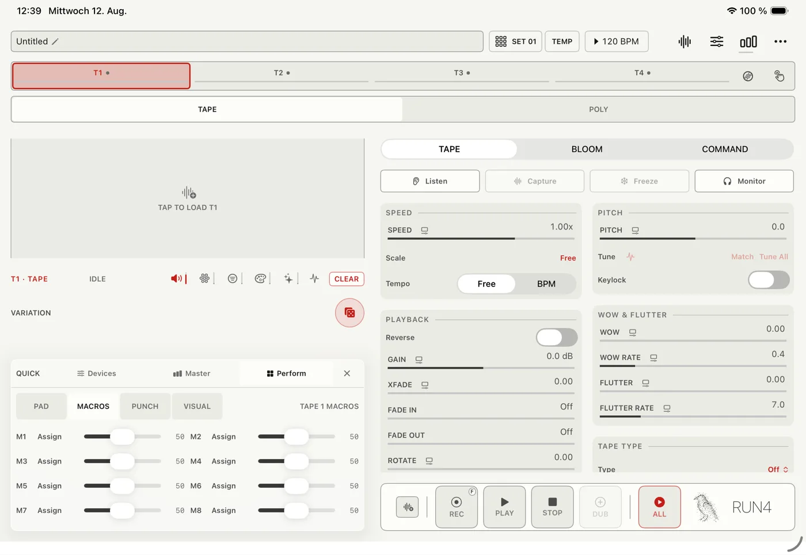
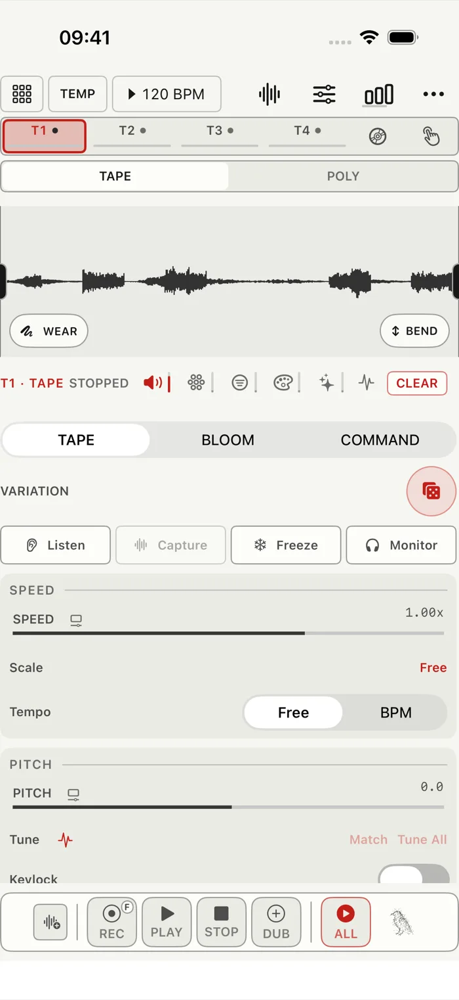
Tape on both idioms. The header carries the project name, Set/Temp, the tempo and the tools; below it the destination bar (T1 to T4, Disc, Perform) and then the Tape/Poly source control for the selected track. iPad landscape lays the same controls out side by side instead of stacking them.
A project is everything: the four tracks, the audio on them, their devices, the mixer and the Sets. Open the Project menu — the ellipsis in the top row, then Projects — to save, to Save As New, to start an empty project, to load another one, or to keep the current setup as a reusable template. Save is always there and always explicit, whether Auto Save is on or off.
Auto Save is on by default, in Settings › General. It keeps the open project up to date while you work, including when you leave RUN4, so the ordinary case is that nothing is ever lost.
With Auto Save off, RUN4 writes only when you choose Save or Save As New. Opening another project does not save the one you are leaving; starting a new project or loading a template warns you before anything is discarded.
Projects › iCloud › Move to iCloud turns the current project into a synced one. It collects the audio it uses once, and from then on Save and Auto Save keep the same cloud project current across iPhone and iPad. Open Cloud pulls its latest state down into RUN4's shared local storage, where the standalone app and the AUv3 can both reach it. The iCloud and Transfer sections start collapsed, so Projects stays short on a phone.
Make Local stops future cloud updates for that project and keeps both the local project and its last cloud copy. If two devices have edited the same revision, RUN4 stops rather than choosing for you, and asks you to open the latest cloud project.
Transfer › Export Project packs the project and every audio file it uses into one .run4project package. Put it in Files or iCloud Drive, then choose Import Project on the other iPhone or iPad to carry on there.
What travels and what does not is worth knowing before you rely on it. A project keeps the identity and the saved document state of hosted AUv3 instruments and effects, but it cannot carry the plug-ins themselves. Install the same AUv3 on the other device and open the project in the standalone app to restore it; RUN4's own AUv3 cannot host another AUv3. Whether a plug-in's own presets, samples and other external content come back with it is up to that plug-in and the version installed.
The actions that can cost you work are checkpointed: pressing REC on a tape that already holds a take, Clear, the Reset choices, and replacing a loaded sample. Open the Undo menu in the top bar and step back. A restored checkpoint brings back the sample, the loop in and out points, Pitch and the rest of that tape's settings exactly as they were.
Undo restores a whole project state rather than one control, so stepping back also reverses what you did after that point. Redo brings it all forward again: the state before each Undo is captured first, so moving backwards and forwards never costs you anything.
The history holds twelve destructive actions and survives ordinary editing and Auto Save. Opening another project, or starting a new one, clears it.
DUB is deliberately outside all of this. An overdub layers into the take and rewrites its file in place, so what was there before the overdub is genuinely gone. When you want to keep the original, record onto another track.
Parameter edits have a history of their own, because they are a different kind of mistake. Undo Edit and Redo Edit, in the same menu, step through recent control moves: the Grain, Tone, Color and Air devices, Tape's playback parameters, and Poly. One drag is one step however many values it passed through on the way, and a drag that ends where it started records nothing at all.
That history holds forty-eight edits, belongs to the scene it was made in, and lasts for the session. It only puts controls back: nothing is reloaded and a playing tape keeps playing, so an Undo in the middle of a set changes the one parameter and nothing else.
Smaller undos stay local to where they happened. The die in Tape, Bloom and Command has its own one-step Undo per section, and the Tune row has its own revert buttons.
Long-press is the second half of nearly every control in RUN4. It never changes the value you are holding; it opens what that control can be connected to. Learning the four below is most of what there is to learn.
The BPM display is the one worth knowing first. Long-pressing it, from anywhere in RUN4, opens Timing & Sync, where MIDI Clock In and Out, Ableton Link, Sync Quantize, Rec Grid and the Metronome all live. Rec Grid quantises Record, Overdub and Play All to RUN4's own tempo grid when no external clock is running, and the Metronome clicks that same grid.
When a parameter is driven by one of the eight macros M1 to M8, a small M appears beside its name. Tap that label to jump straight to the modulator moving it, so a fader that moves on its own is never a mystery.
Long-press targets
BPM display, anywhere in RUN4
Timing & Sync: MIDI Clock In and Out, Ableton Link, Sync Quantize, Rec Grid, Metronome
Any routable parameter or selector
Assign or remove a modulation source, or map it to a track Macro or Rune Pad
Poly pattern step
That step's detailed editor: source, Kit slot and playback, Length, Velocity, Gate, Pitch, Probability, Repeat, Micro, and Mute
Quick device icon
That device's full panel
Part 02
Tape
The four tape tracks: what they record, how you play them with your hands, how they are tuned to each other, and the two sequencers that sit on top.
Tape records audio into a loop and plays it back. It overdubs into that loop, and it can resample RUN4's own internal mix without routing anything out of a speaker and back into a microphone. Reach it from a T1 to T4 chip, then Tape in the source row beneath. It is the quickest way to get sound into RUN4 and start bending it.
REC records into the selected tape. PLAY starts it, using the Tape Start setting — Restart, Resume or Align. STOP stops the selected tape. DUB overdubs onto what is already there. ALL starts and stops every track's transport together.
Long-press a T1 to T4 chip to solo it in place. The other tracks fade out but keep running in sync, and come back at their current positions when the last solo is removed, so a solo never costs you the arrangement. Several tracks can be soloed at once.
Listen arms an internal always-listening buffer and Capture copies the recent internal mix into the tape. That pair is how you resample what RUN4 is already playing, without any of it leaving the app.
Freeze holds the tape player where it is, which is how a loop becomes a sustained texture.
Clear is the destructive one, and it asks what you mean by it. Only Tape wipes the tape material and its state; Tape + Devices also resets Grain, Tone, Color and Air on that track.
The die in Tape, Bloom and Command rolls a variation for whichever section is showing. A visible Undo appears after a roll, one step per section; a new roll, or a change you make by hand, starts a new state.
Two touch chips sit on a loaded waveform. Normally the left one paints behaviour into positions in the recording and the right one performs a gesture while your finger is down. The next section is entirely about them.
Tapping an empty waveform opens Samples with that tape already set as the destination, which is the shortest route from nothing to a sound. Once a tape holds a take, that tap goes back to panning, zooming and dragging the loop handles; the load target only appears while the window is genuinely empty, or holds a take too quiet to be heard.
The waveform draws quiet material larger than it really is, so a faint take stays readable instead of collapsing into a flat line. Louder material is drawn at its true amplitude, and Gain still visibly scales the picture.
Two chips sit on every loaded Tape waveform. The left one is normally a Paint tool and the right one a Gesture. The difference between them is how long what you do lasts: a Paint tool writes behaviour into positions on the recording and it stays there, while a Gesture happens only while your finger is down. Which two you have chosen is stored with that tape, so the two visible slots never need to grow into a menu.
Tap the Paint chip to enter Paint mode, then draw across the waveform. Left and right is the physical point on the tape. Drawing high applies more of it; drawing near the bottom cleans that position again. Tap the chip to leave. Long-press it to choose Wear, Melt or Bloom Paint, to clear the current map, to switch to two gestures, or to load a Touch Preset.
Wear puts position-locked drag, instability and sparse oxide holes exactly where you drew them. It works even with Tape Character Wear Rate at zero, and when cumulative wear is running, the painted marks are also the places that age fastest. Melt darkens, ages and slows the marked material as it passes the head. Bloom Paint brings the existing six-head Bloom in at the painted positions only, without touching the global Bloom switch or the heads you set up.
Drag a Gesture chip to perform it, and the label shows the live amount while your finger is down. Long-press it without moving to pick another gesture; the chooser still works while the tape is playing.
Bend moves tape speed by up to three semitones and coasts smoothly back to the authored Speed on release — a larger bend takes a little longer to come home, and Elasticity adds lag, overshoot and settling to that return. Brake pulls the motor down and adds temporary Melt with it. Catch repeats the fragment under your finger, from twice up to eight times.
Fold and Squeeze use vertical travel rather than horizontal, which is what makes them work at the edge of the waveform where there is nowhere left to go sideways. Drag up for reverse Fold and down for forward Fold; distance chooses the divisions ×2, ×4, ×8 and ×16. Squeeze also works in either direction and narrows the playback window around the point it caught when the gesture began. Melt temporarily raises Tape Character Melt.
Bloom Hold spreads the existing six heads for as long as you hold, with horizontal position changing their motion. Bloom Throw gives them momentum instead, so they coast and fade after you let go. Rub is the plainest of them: a straight vertical 0 to 100% control where distance is simply the amount, adding drag, wear, snags and brief holes, and holding its value until release.
Choose Use Two Gestures from the left chip to turn it into a second gesture slot. Long-press each chip to set its own, then use two fingers to perform both at once — Bend on the left and Bloom Throw on the right, for instance. Long-press either and choose Restore Paint on Left to go straight back. Combinations that would fight over the same playback state are disabled, so releasing one finger can never cancel the other gesture.
Paint maps stay attached to the tape while two gestures are showing, so nothing is thrown away by switching. Gestures are temporary and never overwrite the visible Tape controls. Touch Presets are only shortcuts to a pair, not extra modes: Tape Hands is Wear Paint and Bend, Bloom Hands is Bloom Paint and Bloom Hold, and Broken Tape is Wear Paint and Catch.
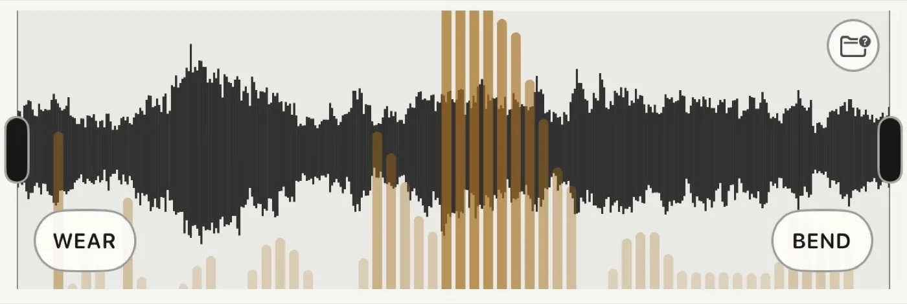
Tape Touch in use: Wear is painted into positions on the waveform while Bend remains ready as the momentary gesture.
A plain tap on Tape REC records with whatever capture setup is currently chosen. The waveform-plus control inside the transport box opens that setup, and it stays open while you work in it.
Record captures and stops at the end. Record & Play captures and immediately starts the new tape looping, which is what you want when you are building a loop live.
Length is either Free or a fixed 1, 2, 4 or 8 bars. A fixed length follows the current RUN4 tempo on a 4/4 grid, so two bars at 120 BPM records for four seconds. A fixed capture starts right at its record edge and therefore steps past the input Level Trigger; a Free capture keeps the Level Trigger, so it can wait for you to play. The waveform HUD shows elapsed time during a Free capture, and the chosen bar count with the time remaining during a fixed Tape or Poly/AUv3 one.
Count-in is Off or 1 Bar. With 1 Bar, READY counts 4, 3, 2, 1 on the current grid before the recorder starts. Those four clicks run independently of the saved Metronome On/Off and activity mode, using its selected click level, so a count-in still works with the metronome off. Stop, or a second REC, cancels the preparation immediately.
The Metronome and its continuous click-level fader live in this same panel, which stays open while you adjust the level. The click follows quarter notes and accents beat 1. In the standalone app it runs outside Tape and Export, so it can never end up inside a recording. Inside the AUv3 it has to leave on RUN4's output bus to be audible at all, which means a host recording that plug-in can include it — RUN4's own internal Tape capture point stays clean either way.
Rec Grid and Length are easy to confuse and do opposite ends of the same job: Rec Grid decides when a transport action begins, and Length decides when a fixed recording ends.
These are on the Tape tab, rather than Bloom or Command. They fall into three groups: how the tape plays, how it loops, and how worn it sounds.
Listen/Capture keeps an eight-second window of the internal mix standing ready, which is what makes resampling something you do rather than something you set up.
Speed is varispeed, from a sixteenth of normal speed up to four times it. It changes timing and pitch together, the way a real tape does, unless Keylock is on. Pitch transposes playback on its own, two octaves either way. Reverse flips the direction.
Tempo switches Speed between free behaviour and BPM-aware behaviour. In BPM mode you tell RUN4 what tempo the captured tape originally represents, with Tape BPM, and it can hold that against the project from then on.
Scale decides whether pitch and speed snap to anything at all: Free, Chromatic, or one of the musical scales. With a scale chosen, Root sets the tonal centre.
Start Grid and Length Grid appear in BPM mode and quantise the loop's start and its length to musical values, from eight bars down to a sixteenth, or Free.
Keylock keeps pitch steadier while Speed moves. Glide smooths the motion between playback changes rather than jumping to them.
Gain sets the tape's output level. The loop edges are looked after for you: a free waveform trim settles onto a nearby zero crossing, and a 3 ms safety blend protects hard source edges and tempo-grid edges without changing the recording's length. XFade extends that wrap blend up to 500 ms, which is what pads and long sustained loops need. Rotate offsets the read position inside the loop.
Shadow blends in one hidden companion playhead. It is not drawn on the waveform and it is not a seventh Bloom head: it follows the same loop while a stored random seed drives slow, bounded deviations in position, rate and pan that approach a target, overshoot and settle, rather than wobbling like a pair of unrelated LFOs. Because the seed is stored, the same project always has the same Shadow character. Level is compensated, so the control stays about depth rather than loudness. Bloom and Freeze take priority over it, and it fades back quietly when normal tape playback returns.
Fade In and Fade Out shape each pass of the loop and are Off to begin with, so material you load or record is never reshaped until you ask for it. Each can reach half the loop, so both at maximum make one triangular swell. Setting only one still leaves the wrap click-free, because the opposite edge is given a short automatic minimum.
The waveform draws Fade In and Fade Out at the length you set, and draws nothing when they are Off. Click-free looping is playback behaviour rather than an edit to your material, so it is not drawn.
SOS is how much of the previous material survives an overdub: high values keep it around for many passes, low values replace it quickly.
Wow and Flutter are the two speeds of tape instability, each with its own Rate. Wow is the slow drift, Flutter the fast one.
Tape Type is Off by default, so an existing tape never changes its sound behind your back. Reel, Sixties, 4-Track, Cassette, Video and Dictaphone each add a calibrated medium: its bandwidth, its dynamics, a subtle noise floor where one belongs, and its own quiet mechanical movement. Reel has only a very small soft-saturation bed for body. Sixties, 4-Track and Dictaphone are the deliberately coloured ones, while Cassette and Video stay clean.
A Tape Type never rewrites the front-panel Wow, Flutter, Failure, Noise or Splice values. Those stay yours: choose the medium first, then add as much motion, hiss or damage as the moment needs.
Tape Character is the wear that is simply there. Age takes colour and bandwidth off immediately. Drift adds slow musical instability. Elasticity changes how the motor settles after a speed move. Dust punches short oxide holes. Melt darkens, loosens and slows the tape.
Wear Rate is the wear that accumulates, and it starts at zero, so nothing ages unless you ask it to. With Wear Rate raised, a looping tape ages a little after every completed pass. Stopping, or returning Wear Rate to zero, freezes the state it reached rather than resetting it. Accumulated shows how far the active loop has got and stores that history with the tape, and Restore removes it whenever you like. Wear Paint is optional on top and only makes the positions you painted age faster. None of this rewrites the source audio, so export a stem when you want to print the worn sound.
Degrade is the damage section. Failure adds wear, pitch snags, crinkles and dropouts. Noise adds hiss, and Noise Color changes the character of that hiss.
Crush is the digital one: a single knob driving the same bit-depth and sample-rate reduction as the Color device's Bitcrush character together, subtle at the bottom of its travel and heavily crushed and lo-fi at the top. At 0 it is fully transparent.
Stutter is Failure's digital sibling. Instead of a soft dip in gain it briefly hard-gates and freezes the read head for a stutter or glitch repeat, riding the same wear clock that Failure and Splice do.
Codec is lossy compression rather than bitcrushing, and it is tuned to read as dull, washy and shimmery like a real low-bitrate MP3 rather than as a harsh crunch: mostly a modulated smear and diffusion of the high end plus genuine treble rolloff, with only a minor trace of digital aliasing underneath. That is what separates it from Crush, whose character is bit-depth-led. It is clearly audible from about the halfway point, picks up a subtle amplitude breathing and stereo widening as it rises, and gains an extra kick of grit and dulling in the last stretch of the knob. At 0 it is transparent.
The die beside Tape Variation rolls a restrained new tape character: Speed, Pitch, playback movement, Wow and Flutter change, while your source, gain, loop, routing and project tempo are left alone. Long-press that die to put the exact pre-roll settings back.
Four tapes recorded at four different moments will not agree about pitch. The Tune row, in the Tuning card beneath Pitch, is for bringing them into a musical relationship. It appears once the selected track has a take. The analysis works from the current loop region and reports the key you can actually hear, including the current Tape pitch and any non-Keylocked speed shift.
Tap the waveform analyse button to detect the selected tape's key. It is a guide rather than a correction: sparse, noisy or genuinely atonal recordings come back as No key, which is more useful than a confident wrong answer.
Match analyses the selected tape against the other recorded ones and offers pitch-match choices. Choosing one moves the selected tape's Pitch and switches its pitch snapping to Chromatic. The audio file itself is never rewritten. The curved-arrow button reverts the latest Match on that tape.
Tapping Match again reopens the same list instead of analysing a second time, so Best, Fifth, Darker and Brighter can be tried against each other. The one in effect is ticked, and picking another replaces it rather than stacking a second shift on top. Use the analyse button when you want a genuinely fresh analysis — after retrimming the loop, for instance.
Tune All › To T1–T4 takes the recorded tape you choose as the reference and applies the best pitch match to every other recorded tape it can analyse. The circular curved-arrow button reverts that whole gesture as one action, provided those tracks have not been changed since.
Bloom turns one tape read head into a small cloud of six. It is on the Bloom tab, and it is what you reach for when you want a chorused loop, a smeared harmony, a cloud, or a swarm that animates itself.
Spread separates the read heads around the tape, Motion animates their positions, and Stereo widens them across the field. Those three are the shape of the cloud.
Warble and Warble Rate add pitch and time instability to the cloud. Degrade adds tape wear to the Bloom behaviour specifically, rather than to the tape underneath it.
Each head then has its own Direction, Level, Pitch, Speed and Pan. Direction is Stop, Fwd or Rev, Pitch is in semitones, and Speed changes that one head's playback rate — which is how a cloud becomes six related but independent voices instead of six copies.
Reset Global puts Bloom's shared controls back. Reset Heads puts all six heads back.
The die beside Bloom, All Heads turns Bloom on and builds one balanced six-head cloud. It deliberately does not randomise each head into unrelated extremes, because that gives you noise rather than a starting point. Long-press that die to restore the previous Bloom state, every head included.
Command is a sixteen-step sequencer, but it sequences actions rather than notes. On the Command tab, a step can make the tape jump, reverse, retrigger, squeeze its loop, stutter, gate, hold, nudge, spread Bloom, or fire a Memory.
BPM here is the shared master tempo, not a local one. Editing it changes the same project tempo that Link, MIDI clock and everything else synced already follows.
Pattern chooses A, B, C or D, and Chain puts the four slots into a performance order. Seed Lock keeps the random and probability behaviour repeatable, so a pattern you liked stays the one you liked; New Seed rolls a different variation.
Every step has a command, a value where the command needs one, and a Probability. At 1 it always fires. Below that it becomes conditional, which is the cheapest way there is to stop a sixteen-step pattern from sounding like sixteen steps.
Which value a step uses follows from its command: Jump takes a Position, Rate takes a rate, Spread moves Bloom's spread, Squeeze changes the loop size, Stutter takes a number of Repeats, and Nudge takes an Offset.
A Memory step plays a stored Memory and can transpose it chromatically, two octaves either way. Level, Fade In and Fade Out shape each triggered snippet. A Memory that a Command step uses is protected from the Memory bank's automatic eviction, so a pattern can never quietly lose the audio it triggers. Clear Pattern empties the active pattern.
The die beside Command, Pattern fills the selected pattern with sparse, playable tape gestures. It never creates Memory steps, so it cannot surprise you by triggering stored audio. Long-press that die to restore the entire previous pattern.
Part 03
Poly and Disc
Playing a track as an instrument — from the keyboard, a sample, a synth or a hosted plug-in — and the shared deck for long files.
Poly plays the selected track as a polyphonic instrument. Reach it from a T1 to T4 chip, then Poly in the source row beneath. It can play a loaded sample, one of the two internal synths, or a hosted AUv3 instrument in the standalone app.
Choose Sample, Classic, FM or AUv3 at the top of Poly. Classic and FM are RUN4's own engines. AUv3 hosting is absent from the plug-in build, because iOS does not let an AUv3 extension host other AUv3 instruments.
The on-screen keyboard and incoming MIDI share the same voice path, so nothing behaves differently depending on how you played it. The octave buttons shift the playable range, and the current base octave is printed at the bottom of its C key.
The keyboard and the step sequencer each have a show/hide button in the Poly transport box. Hiding one also collapses its keyboard and scale controls and gives the freed space back to the Sample, Synth or AUv3 editor, which is how a small screen still gets a usable editor.
OCT -, OCT +, CHORDS and SCALE share one control row. Tap CHORDS or SCALE to open its menu.
From T1 to T4 picks a tape as a musical reference, and Match analyses it and applies its detected root and major/minor key to whichever keyboard mode is active: SCALE gets a matching guide, CHORDS gets the diatonic chord map that goes with it. The source tape is not changed. Both menus can lock playing to that chord map or scale — the piano layout stays intact, unavailable keys dim, and live MIDI and QWERTY notes are filtered too, not only what you tap on screen.
Poly's step strip — sixteen steps to a bank, up to sixty-four in a pattern — is a compact way to enter notes or Kit hits for the selected source, and to print an idea into Tape. It does not arrange the four tape tracks and is deliberately not a complete song or multitrack sequencer. The next section covers what it does do.
Long-press the main Poly REC for Free or a fixed bar length, Count-in Off or 1 Bar, and the Metronome settings. Tap REC to capture the live Poly or hosted AUv3 output into the paired tape. The small record circle in the sequencer is the same Print-to-Tape action and uses those same settings. Poly shows READY during the preparation bar, then a countdown for a fixed capture and elapsed time for a Free one.
The dice randomises performance values. Kit Presets save and recall the eight slot choices and nothing else, so the same Kit can carry different patterns, or one pattern can be re-voiced by loading another Kit underneath it.
Printing a fixed number of bars is what makes tempo-aware AUv3 grooveboxes straightforward: RUN4 supplies the project transport and closes the tape exactly on the chosen bar boundary.
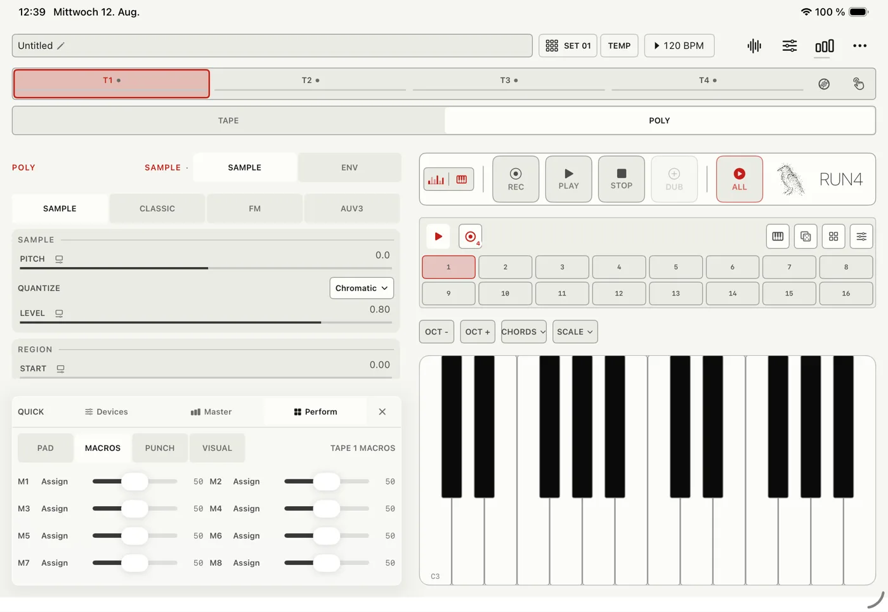
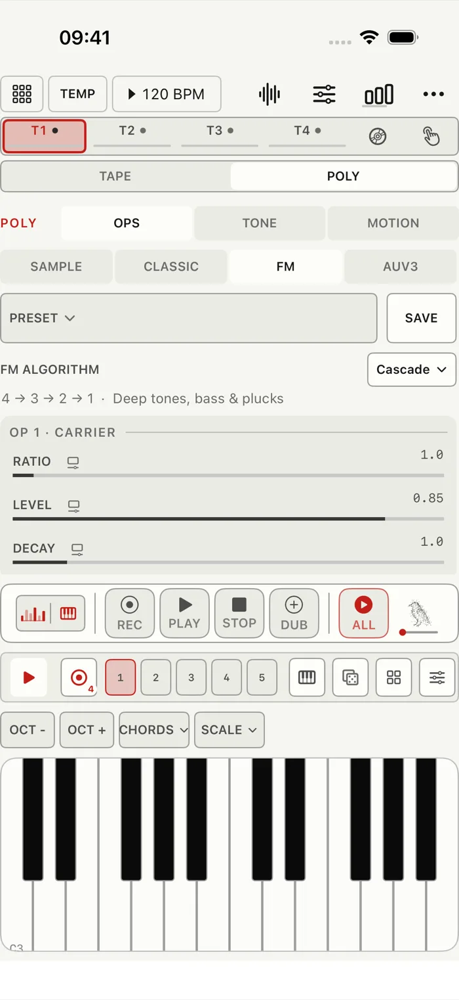
Poly on both idioms. Keyboard, pattern, and sample or synth controls for the selected track; on iPad the keyboard and the pattern grid sit beside the parameters rather than below them.
The step strip is a compact note and Kit sequencer for the selected track. Sixteen steps are shown at a time and a pattern can hold up to sixty-four. It plays the current Poly sample, synth, hosted AUv3 instrument, or one of the eight Kit slots.
Tap or long-press any step to select it and open the inline Step editor. Its Source, Event, Pitch and Behavior cards keep the Kit slot and playback, Length, Velocity, Gate, Pitch, Probability, Repeat, Micro timing and Mute clearly apart from each other. A step plays either notes or one Kit slot, never both, and muting is explicit in the editor rather than hidden behind a quick tap on the step.
The grid is designed to be read without opening anything. Every step shows its Velocity as a fill inside the cell, in the track colour where the step actually sounds and in neutral grey where it is empty or muted, so the dynamics of a whole pattern are visible at a glance. Probability appears as a fine line along the bottom of a cell, and only when it is below one hundred percent — at full probability every step would carry the same line, which says nothing, so the line appearing is itself the signal.
On iPad's expanded grid, drag up or down on a step to set its Velocity directly, and keep the finger down while moving sideways to draw a ramp across the pattern in one stroke. Empty steps take a value too, so a curve can be shaped before the notes are there; the drag only ever moves the number and never creates a note. On iPhone's compact strip that horizontal motion is needed to scroll to steps beyond the screen, so Velocity there is set in the Step editor.
Length lets an event continue across later grid steps without occupying or locking them. Every later event stays independent and can trigger while the earlier note or sample is still sounding, and a line along the bottom of the grid shows the complete span. Gate then controls how much of that Length is actually heard, for notes and for Gate-mode Kit slots, so a three-step event at 80% sounds for 2.4 steps. Repeat divides the complete Length into ratcheted events rather than cramming the repeats into the first grid step.
Resolution is the musical duration of one step, from 4 Bars, 2 Bars and 1 Bar down through 1/2, 1/4, 1/8, 1/16, 1/32 and 1/64. Pattern length and Resolution multiply, so sixteen steps at 1 Bar is a sixteen-bar cycle.
Each K1 to K8 slot has its own playback mode. Gate uses the step's Length and Gate. One-shot plays the complete source sample even when its step ends, and other Kit steps can trigger and overlap while it does. Existing projects open in Gate mode, so nothing you already authored changes its timing.
Pattern Stop doubles as Kit Kill All: it cancels pending hits and immediately silences every Kit sample the pattern started, One-shots included. RUN4's own Stop All goes further and silences the whole performance.
The Pattern workspace opens in Poly's upper editor rather than covering the screen with a sheet, so the sequencer and the keyboard stay visible and playable below it. Step edits the selected event. Tools groups pattern setup, Sound to Pattern, Transform, Euclidean creation and targeted edits into the same parameter-card language Poly and Tape use. Kit loads K1 to K8 and manages Kit presets without a modal panel.
Sound to Pattern is the starting point: choose Notes, All, or K1 to K8. With Notes you can play straight in with the still-visible keyboard and Step Entry. A Kit target exposes all eight slots plus Load Sample, so an empty project can load a sound and build its first Euclidean rhythm without visiting another screen first.
The Target chooses what the second group of tools acts on: All, Notes, or a single Kit slot. This is how one sound gets moved, filled or emptied against everything else. Because a step holds one event — notes or one Kit slot, never both — a Kit Target is the closest thing this sequencer has to a lane.
Reverse mirrors the active steps end to end. ×2 doubles the pattern length and copies the current cycle into the new second half, which is the quickest route from an eight-step idea to a sixteen-step one with a varied tail. ÷2 halves the pattern and keeps the first half; the steps beyond the new end are kept exactly as a manual Length change leaves them.
Rotate Left and Rotate Right move complete steps with their assignments and locks, and a long event landing at the pattern boundary is shortened to fit. With a Notes or Kit Target only that source moves. Because a step holds one event, an event whose destination is already taken by a different source keeps its own step instead of overwriting it — nothing is ever lost this way, and a rotation with every destination blocked simply makes no change.
Euclidean distributes one source across Hits and Rotate. With a Kit Target it works on an empty pattern too, so five hits of K4 can be placed without a populated step to copy from, reusing whatever locks the pattern already gives that slot. A slot with no sample loaded and no existing use is refused rather than scattering silent triggers. Apply uses the displayed values; Randomize picks a contained new hit count and rotation, applies it immediately, and updates both steppers. Events from other sources are never overwritten, and matching off-pulse events are only muted, so their details stay recoverable.
Swing offsets every off-beat step, from Straight through 54%, 58% and 62% to 66%, which is the familiar triplet feel. It is written into the steps' own Micro timing rather than kept as a separate pattern setting, so a swung pattern stays hand-editable and a note added later arrives already in the pocket. Because the control reads its value back out of the steps, moving one hit by hand shows up there rather than hiding behind a setting the pattern no longer follows.
Humanize drifts Velocity by up to 12% and Micro timing by up to 6% around the values you already authored. That is what separates it from the dice, which draws fresh values across the full musical range. Gate and Probability are deliberately left alone and rests are never varied, and a short Applied confirmation makes the otherwise invisible edit visible.
Clear empties every step the Target matches, from the whole pattern down to a single Kit slot.
Undo restores the pattern as it was immediately before the last Pattern Tool — Rotate, Reverse, ×2, ÷2, Swing, Humanize, Euclidean, Clear, or a performance randomisation. It is one step rather than a history, and any hand edit afterwards releases it, so it can never discard newer work. The same action also sits in the pattern dice menu.
There is currently no Loop or Retrigger/Continue mode per Kit slot. Use Gate for an authored duration, or One-shot for the complete file.
Step Entry writes played MIDI, on-screen or QWERTY notes into the selected step, and Auto Advance moves to the next step after each entry.
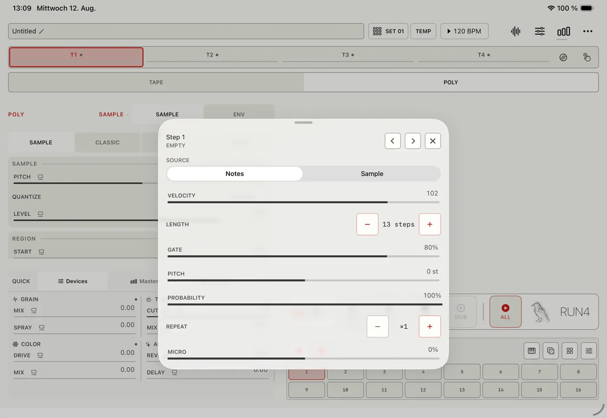
A long event. Its duration is visible, while later steps remain independently playable.
With Sample chosen at the top of Poly, a live field above the controls draws the loaded sample. The playable region set by Start and Length is shaded over the waveform, so those two values point at something instead of standing alone as numbers. While a note sounds, a thin line runs through the field at the read position of the newest voice.
With nothing loaded the field stays empty and reads Load Sample. Tapping it anywhere opens the Sample Browser, which is the shortest way to fill the track.
Start chooses where the sample begins and Length how much of it is playable from there. Loop sets the loop point inside that playable region, and XFade smooths the loop join for up to 500 ms. Loop Mode Fwd runs from the end back to the loop start; Flip ping-pongs forwards and backwards instead.
Pitch offsets the sample in semitones, and Pitch Quantize decides whether that snaps to Chromatic semitones or stays Free for continuous detune. Level is the per-voice output.
Attack, Decay, Sustain and Curve shape the amp envelope, and Decay currently doubles as the release for a sample voice. Velocity sets how much MIDI or keyboard velocity affects loudness.
Fltr Amount applies a filter envelope to the voice, and Fltr Shape changes how closely that envelope follows — or deliberately departs from — the amp envelope.
Synth mode has two engines. Classic is subtractive and FM has four operators. Choose either at the top of Poly, where AUv3 sits beside them for hosted instruments. Presets belong to the selected engine, and you can save your own.
The engine selector stays in the fixed header beside POLY, so what is sounding remains visible while the controls scroll underneath it. The named sections sit directly above the cards they switch: Sound, Filter and Motion for Classic, Ops, Tone and Motion for FM, Source and Env for the sample player.
Each engine draws one note event in a live field above its controls: the amp envelope as the outline, filled with what the engine is actually making. Classic shows the selected waveform; FM renders its operator pair, so moving a Ratio or an operator Level visibly changes the curve. Attack, Decay and Release share the width in proportion to their times, which makes a long attack visibly eat the rest of the event. The amp envelope is shared by both engines, so its outline is the same in each.
In Classic, Waveform chooses Sine, Triangle, Saw or Square. In FM, Cascade, Merge, Dual and Split select the operator routing.
The filter has Cutoff and Resonance. Cutoff is mapped musically rather than linearly across the frequency range, and Resonance adds emphasis without being designed to self-oscillate.
The amp envelope has Attack, Decay, Sustain and Release. The filter envelope adds Env Amount over its own Flt Attack, Flt Decay, Flt Sustain and Flt Release.
The LFO has Shape, Rate, Pitch Amount and Cutoff Amt. Pitch Amount reaches about an octave of peak pitch movement; Cutoff Amt moves the filter over several octaves.
AUv3 mode scans the Music Device instruments installed on the device. Select loads one, Edit Plugin opens its editor where it has one, and Remove AUv3 unloads it. A search field filters the list by name or manufacturer, the same in-panel search already used for AUv3 effects.
A hosted instrument receives RUN4's tempo, beat position, time signature and play/stop state, so transport-aware grooveboxes and sequencers start, stop and print against the same musical grid everything else is using.
Where the plug-in supports it, its editor opens Docked inside Poly, Compact, or Full Screen. Rotating the device keeps the Poly page and the editor presentation you had.
Disc is one performance deck for the whole set, reached from the Disc chip in the destination bar. It streams a long file from storage rather than loading it into the tape or sample buffer, which is what makes hour-long material practical.
Because it is shared rather than owned by a track, it has to be told where to be heard. The T1 to T4 buttons at the top still choose the active working track, while Disc's own Output menu chooses the route separately: Follow Selected moves the deck with the active track, and Pinned keeps it on one. The OUT T1 to OUT T4 badge shows the effective route in that track's colour. Tap the badge to select that track and edit the Grain, Tone, Color, Air, sends and mixer channel the disc is actually running through.
Link opens file selection and loading for the shared source, and the displayed filename confirms what is loaded. Eject removes only RUN4's link to that file — it never deletes the original from Files, iCloud or an external drive. The position bar can be scrubbed.
Level sets the disc output. Start chooses a normalised start point in the file, and Loop repeats the file or region.
The record itself is a control rather than an indicator: drag it to scrub. One full turn is roughly one revolution at 33 1/3 rpm, so a slow hand pitches the material down and a record-speed turn lands near 1x. On a wide layout it fills its column, and that is not decoration — more record under the finger is more resolution per millimetre, which is what makes fine scrubbing possible at all.
Disc has its own PLAY and STOP, and the same ALL behaviour as the other transport surfaces.
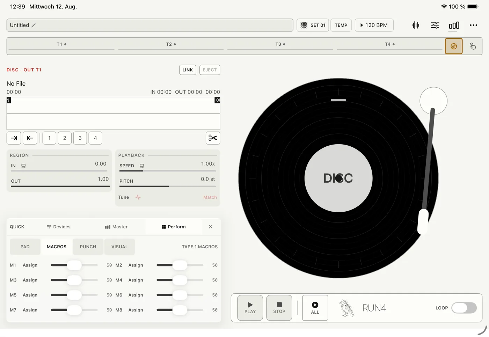
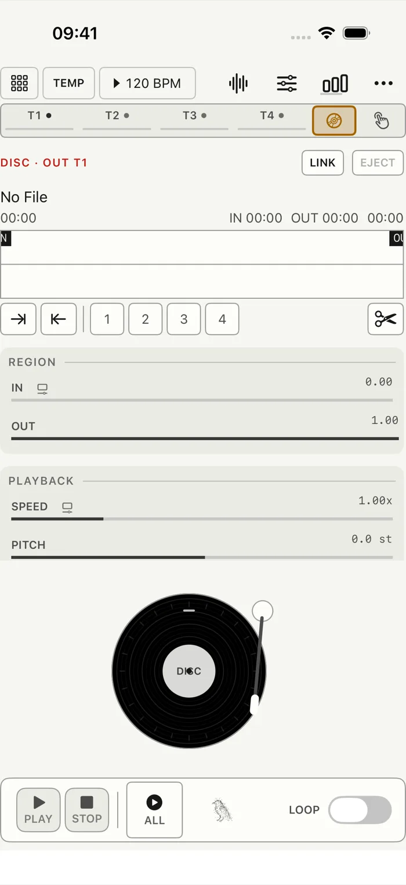
Disc on both idioms. A global workspace for long streamed files, outside the four tracks.
Part 04
Devices
The four devices every track runs through, in the order it runs through them, and the Mod page that moves them.
Grain chops the source into grains and plays them back as clouds, scans and delay-like textures. It is the first device in the chain, on the Grain tab inside Devices. Mix starts at 0, so it does nothing at all until you blend it in.
The first group is the grains themselves. Rate is how densely they are spawned, and Rate Sync moves that from free timing to Straight, Dotted or Triplet divisions. Size is how long each grain lasts and Contour moves its window from sharp to soft. Warp bends the read position. Pitch transposes the grains, Scale snaps that to Free, Chromatic, Major, Minor, Dorian, Pentatonic or Fifths, and Detune spreads the pitch across them. Mix blends the grains against the original source.
Motion is what stops a cloud standing still. Spray randomises position and stereo spread. Pattern moves from regular pulses towards genuine cloud behaviour. Scan travels back through recent buffer history and Stretch slows that travel down. Scan Mode chooses Stretch, Position, Delay Sync or Delay Free; Spray Mode chooses stereo Warp or Warp Mono.
Random adds the small inconsistencies that make a cloud sound alive rather than machined. Rate jitters the spawn timing, Size jitters the durations, Amp randomises grain level, and Reverse sets how likely a grain is to play backwards. Rand Pitch chooses Detune, Random or Random Mono.
Engine is where the device's character is decided. Engine selects Live Cloud or Scan Cloud. Feedback chooses between input SOS and Grain Output, and SOS sets how much earlier material stays in the buffer. Run While Idle keeps the Scan engine moving with no source audio arriving, so a texture does not die the moment the track stops. Save Buffer keeps the current buffer contents as reusable material. Delay Time and Delay Beats set free or tempo-synced scan-delay timing.
Grain Freeze is the compact final row of the block. Turn it on and the device switches to Scan Cloud and stops new audio replacing the captured buffer; what is in there keeps playing and can still be scanned, pitched, sprayed and modulated. Turn it off to resume writing.
The factory presets are cloud and rhythmic starting points, plus four aimed at particular sources: Beat Reinforce, Vocal Halo, Chord Drift and Bass Shadow. Selecting one resets Grain before applying it, so a preset is a clean starting point rather than a layer over your last experiment. Your own complete setups can be saved alongside them.
Tone is the filter and resonator device, second in the chain. It starts transparent — the lowpass fully open and Mix at 0 — so it is silent until you engage it.
Type chooses Lowpass, Highpass, Bandpass, Formant or Resonator. The first four are the ordinary filters: Cutoff sets the corner, or the vowel position for Formant, Resonance emphasises it, and Mix blends the filtered signal into the track.
Resonator is a different instrument sharing the same tab. Voices sets one to sixteen resonant bands, Root shifts the whole tuned bank and Scale quantises it to musical notes. Structure moves the bands from harmonic spacing towards stretched or metallic. Detune spreads them apart, Resonance sets their emphasis, Decay extends their ringing, and Brightness tilts the bank. Noise excites the resonator from the inside, which is what lets it keep singing over quiet or intermittent input rather than dying between notes. Mix blends the result.
Color adds drive, reduction and modulation character. It is third in the chain and, like the others, transparent with Mix at 0.
Type chooses Saturate, Fold, Bitcrush or Ringmod. Saturate is warm tanh-style saturation and Fold is polynomial wavefolding, which is richer and less forgiving; both use Drive, Tone and Mix. Bitcrush uses Bits and Rate, where lower Bits reduces bit depth and lower Rate reduces sample rate, with Tone to darken or open the result. Ringmod uses Drive, Frequency, Tone and Mix, with Frequency running from low tremolo and ring tones up into metallic sidebands.
Dynamics works across every one of those types, and it is what keeps a heavily driven track usable. Crossover chooses the low/high split, Focus drives one side harder while protecting the other, Tilt reshapes the wet spectrum, Compress adds level-matched compression, and Gate suppresses low-level material using the clean input as its key rather than the distorted signal.
Noise adds a character layer after the selected Color process. Amount sets its level, Color moves it from darker to brighter, and Decay controls how strongly it follows the source envelope and falls away with it.
Air is space: reverb, delay, a freeze, the colour of the repeats, and a broad tonal tilt over all of it. It is the last device before the mixer.
Reverb Type chooses Room, Hall, Plate or Space. Air Mix is the reverb level, Air Size the tail size and feedback, and Damping darkens it. Freeze holds that tail, which turns the reverb into a sustained performance layer you can play over.
Delay Type chooses Digital, Ping-Pong, Tape or Diffusion. Delay Mix is the delay level, Delay Time the repeat timing, and Delay Feedback how much regenerates.
The repeats can then be coloured. Delay Pitch shifts them up or down, with Chromatic snapping that motion to semitones and Glide leaving it continuous. Repeat Tone darkens them, and Saturation soft-clips the feedback path, so a long tail degrades as it builds rather than piling up cleanly.
Tone is one broad bipolar control over the whole space: negative leans darker and low-pass, positive brighter and high-pass.
Mod is on the last Devices tab, but nothing passes through it. It is four control sources, M1 to M4, belonging to the selected track, and it exists to move the other devices for you.
A slot can be an LFO, an Envelope, a Random source, a Follow source or a Self-Listening one. The LFO offers Sine, Triangle, Square, Saw, Sample Hold, Draw and Steps. The Envelope responds to Transport or Note triggers. Random produces stepped or smoothed variation. Follow tracks the selected track's current level. Self listens to the energy of the overall mix.
Routing can be done from either end. Add Target inside the Mod device routes a source outward, or long-press any routable parameter and assign it there. One modulator can drive several targets. Route depth is bipolar, so a single source can push one parameter up while pulling another down, and several sources on one target are added around its normal base value rather than fighting over it.
Draw is a modulator you paint by hand. Select an M slot, choose LFO as Source, then Draw as Wave, and drag from left to right across Draw Gesture to define one bipolar cycle: the centre line is zero, above it is positive, below it is negative. Fast strokes are interpolated, so the curve stays continuous instead of breaking up where your hand moved quickly.
Undo restores the previous drawing, Smooth softens sharp changes, and Clear returns the canvas to zero. The curve can run as a repeating Loop or as One Shot. One Shot launches from Transport or Note, and Touch Trigger fires it straight from the panel while you are setting it up.
Steps is the quantised sibling of Draw. The same slot with Steps as Wave gives a table of held values instead of a continuous gesture. Steps sets its length from 2 to 32 and the grid shows eight cells per row. Drag across the cells to write the table, with the same centre-line convention, so one drag can sweep a whole ramp. It is stored with the Set exactly as a Draw curve is.
Any length is allowed, not only powers of two, and that is the point of it. A table of 13 or 15 steps against a 16-step pattern takes several bars to come back around, which is the cheapest source of movement a sequencer has.
The shape controls apply to every wave, Steps included. Rate is playback speed, Depth scales the result, Phase moves the starting point, Skew changes timing across the cycle, Fold reflects the shape into additional turns, Curve changes its response, and Spread offsets related motion across tracks and slots so four tracks do not all breathe in lockstep.
Draw curves, source settings and routes are all stored with the current Set.
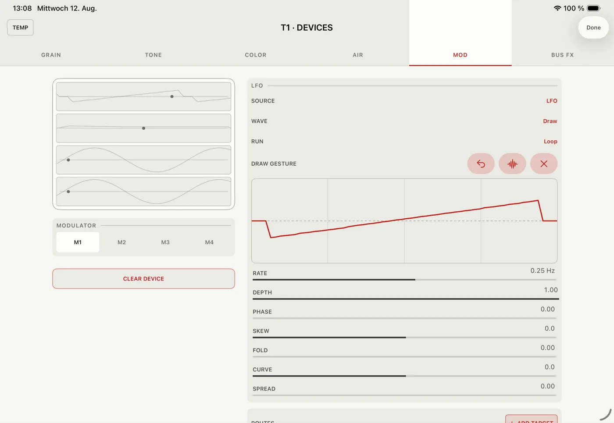
A real Draw cycle: the painted curve becomes the LFO movement.
Part 05
Sound library
Getting material in, and keeping hold of the moments worth returning to.
The waveform button in the top row opens Samples. It holds four kinds of thing: Memories, your own Recordings, files you have Recently Imported, and Linked Folders.
Import brings audio in through the system picker, copying or linking the files you select. Link Folder adds a browsable folder tree instead, using security-scoped access, which is how a large library stays where it lives rather than being duplicated into RUN4. AudioShare opens AudioShare and returns imported audio to RUN4 where it is available.
Tap an item, or its play icon, to audition it, and Stop to end the audition. Load Tape puts the selected item onto Tape, Load Poly loads it into Poly, and Load Disc links it for streaming.
Recordings can be deleted, imported-history entries removed, samples renamed and linked folders unlinked. Files that have gone missing, or that RUN4 cannot read, are marked in the browser rather than failing silently when you try to load one.
A Memory is a short capture of the overall mix — a moment you did not plan to keep. They are stored as ordinary reusable audio snippets and appear in the Samples browser alongside everything else.
Memory Listen is one global capture switch, in the Memories section. It captures the post-master mix without loading into or changing a Tape. It shares a single internal capture tap with Tape Listen, so turning Memory Listen on turns any armed Tape Listen off: one of them is listening at a time.
Remember stores the most recent capture window. Auto stores a Memory every eight seconds for as long as Memory Listen is armed, which is what catches the thing you did not know you would want. If the buffer has not filled with audio yet, RUN4 says so rather than quietly creating an empty Memory.
A Memory can be auditioned, recalled to Tape, or recalled as a variation: Reversed, Pitch +7, an octave down, or half tempo.
The bank is bounded. Older Memories that nothing refers to roll off when it fills, but a Memory used by any Command Sequencer step is kept, so a pattern can never lose the audio it triggers. Those Command steps can also transpose a Memory chromatically as they fire it.
Part 06
Performance and visualizer
The live stage: Sets, macros, the Rune Pad, and the graphics that go behind them.
Perform is the dedicated live workspace, the same on iPhone, iPad and Mac, reached from the Perform chip at the end of the destination bar. Closing it returns you directly to the Tape or Poly view you came from.
Its four track lanes are fixed: T1 to T4, each with its waveform, Play/Stop, Level, DJ Filter and macros M1 and M2. Nothing moves around between songs, and that is the whole reason to use it live — switching is predictable because every tape is always in the same place. In phone portrait the stage scrolls rather than shrinking, so the controls keep a useful length under a finger.
Play All sits at the left of Perform's own action row, beside the visualizer, Rune Pad and settings buttons, and starts or stops every track. Set recall and TEMP are in the app header above, which stays present here.
A Set stores the four tracks, their material and device state, the mixer state, the macros, the links and the performance setup — effectively the whole playable state of the instrument. Open the Set menu to recall a slot, store the current state, or rename the current Set.
TEMP is a safe layer over the top for changes you do not intend to keep. Leaving TEMP restores the stored Set. It does not remove a hosted AUv3 instrument or effect, so a plug-in you loaded stays loaded.
Punch-in FX switches between RUN4's immediate global effects and assignable Custom slots. Momentary responds only while a pad is held; Hold latches the effect until it is released.
The Rune Pad button reveals the XY performance surface and its grouped mapping controls. It appears inline on iPhone and in portrait, and as an overlay in wide landscape so the four track lanes stay visible behind it.
Performance Settings — the sliders icon in that same action row — keeps Macros and Track Links on separate pages. A macro has a Value control from 0 to 1 and an assign menu of grouped track and device options.
One macro can drive more than one parameter. Once a primary target is assigned, Add Target opens the same grouped menu again and the new parameter appears as its own chip, with a Depth control and a trash button. Depth is how far that particular parameter moves as the macro's Value changes, so one knob can move three things by three different amounts.
A target does not have to belong to the macro's own track: both the primary-target menu and Add Target also list every other track and TÓLF as their own submenus, so one macro can aggregate parameters across tracks and banks — for example T1's Pitch, T2's Pitch, and TÓLF's Cutoff, each with its own Depth, all under one macro slot. A parameter already claimed by another macro cell stays visible but greyed out, labelled with its owner (for example 'in use by T2 M3'), so a target is never silently stolen from the macro already using it.
Choosing Unassigned from the assign menu clears the macro completely, including every added target, not only the primary one.
Macro CC learn maps an incoming MIDI CC to a macro. For a direct mapping, long-press the parameter itself: the Modulation and Macro choices stay at the top, with MIDI Learn at the bottom. RUN4 reuses that parameter's assigned macro, or takes a free slot, then learns the next CC that arrives. Clear MIDI CC in the context menu removes it again.
Track Links make tracks react to each other. A source plays and a target gets out of its way: Duck makes room by getting quieter, Split steps aside in the stereo field, Shade takes the top end off. Intensity is how far it goes.
There are four links, one per tape. The target is one of the four tapes. The source can be any of them, and, once TÓLF is there, any of its twelve tracks or any mix group you have made — so a duck can be keyed off the whole drum group rather than off one track of it and hoping that one is playing. A muted group keys nothing, and a link pointing at a group you have since deleted simply stops working rather than latching onto another one.
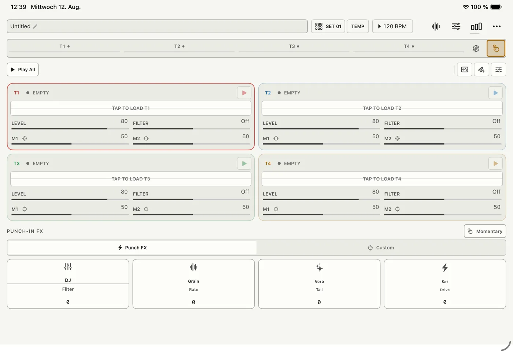
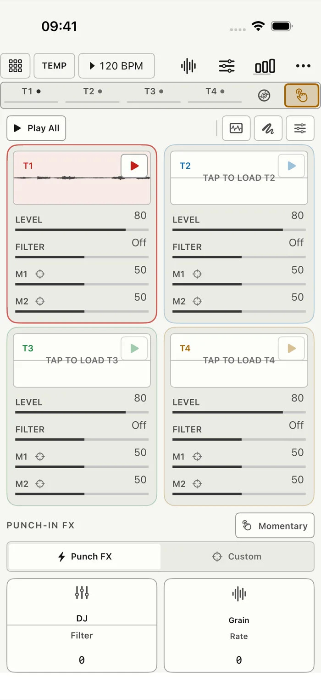
Performance on both idioms. Four track panels with level, filter and macros, over the Punch-in FX row.
The visualizer turns the four tapes and the master signal into stage graphics. It is strictly read-only: it never changes the transport, the routing or any parameter, so opening it in the middle of a set cannot cost you anything.
It opens in two places. In Performance, the waveform button in the top toolbar fills the display. On iPad in landscape, the Quick dock has a Visual tab holding a live preview, and Open Visualizer runs the full stage inside the dock, so the tapes, mixer and transport stay visible and usable around it.
It runs inside the AUv3 plug-in as well, in the same two steps: Open Visualizer gives you the docked stage in the host's editor, and Full Screen is the step beyond it.
From the docked stage, Full Screen promotes the same scene to the whole display. The docked stage stays underneath, so closing full screen returns you to the dock you came from, with scene, palette and source unchanged.
Tap once to show or hide the controls; they hide again after about two seconds. While they are visible you can Close, go Full Screen, choose the audio source, choose the scene, switch palette, and open Touch FX.
Source selects what drives the graphics: the master signal, or a single tape. Choosing one tape parks the others so the composition stays legible, and that tape's own spectrum drives the scene.
Palette switches between Tapes, which uses the four track colours, and Mono, which uses a single hue and lets brightness carry the information instead.
Swipe left or right to change scene. With Touch FX enabled, a one-finger drag belongs to the effects, so scene changes move to a two-finger swipe; the scene menu in the controls always works either way.
Touch FX makes the stage a second performance surface. It reuses the Rune Pad engine, so a finger on the graphics drives exactly the effects the Rune Pad drives. It is off by default and configured from the Touch FX button.
Scenes react to the frequency content of the material and not only to its level, so bass, body and treble drive different parts of a picture rather than all pushing the same slider. Reduce Motion simplifies every scene: fewer elements, no drift, and no flicker.
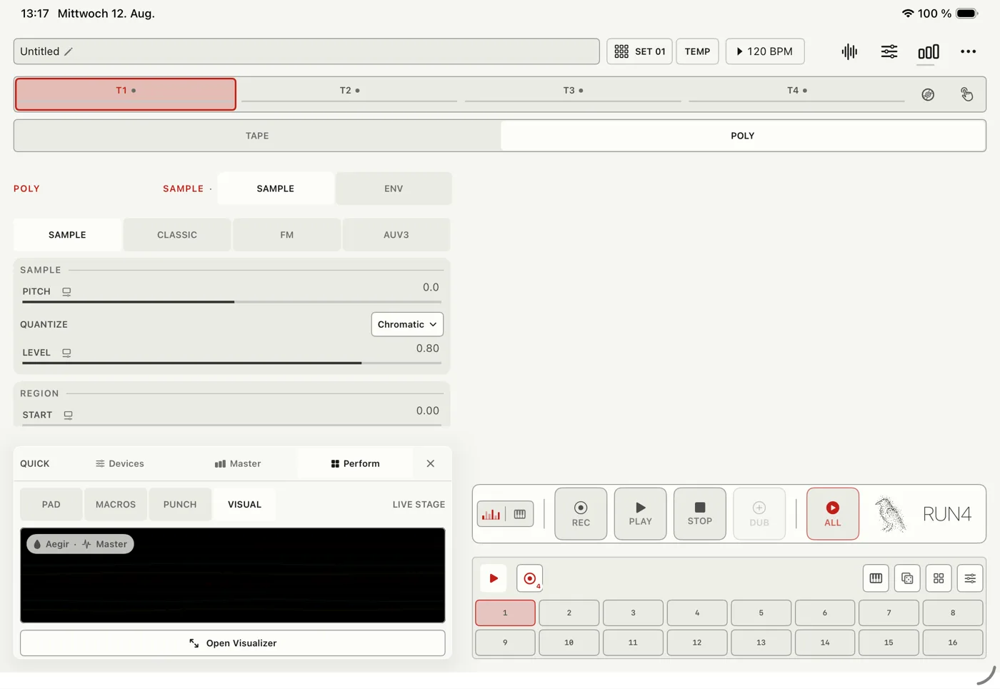
The Quick dock on iPad landscape, with the Visual tab holding a live preview. Open Visualizer runs the full stage inside the dock, so tapes, mixer and transport stay usable around it.
Every scene reads the same four tapes and the same master signal. What differs is what each one makes of them, so it is worth skimming the list once to know what is there when you want it.
Draupnir. Tape filaments radiating from a common centre, opening and bending with each track.
Elivagar. Particle streams along curved trajectories sharing one vanishing point.
Njord. The oscilloscope reimagined: a thick luminous waveform band trailing its own afterimages. Calm material looks calm, loud material erupts.
Jormungandr. Arcs and points orbiting a centre, tangling as the material builds.
Freyr. A particle field around a gravity well. Bass swells the haze at the centre and each bar breathes the field outward.
Aegir. A slow ocean surface.
Bifrost Gate. A tunnel of radial cells receding into depth, with black wedges opening onto a liquid colour field and a sparse star layer between them.
Yggdrasil. A tree whose trunk takes weight from the low bands and whose canopy fills out with the highs.
Nidhogg. One closed body of luminous paths, reforming between a dual vortex, a spherical cage, a folded membrane, and a radial burst. A strong attack tears it sideways in raster slices.
Jotunheim. Mushroom colonies that emerge, mature, and decay; bass material grows the field.
Nornir Loom. An elastic grid of horizontal and vertical lanes that shears, travels, and pulls through a lens at its centre.
Idavoll. Four clusters, one per tape.
Helheim. Long threads hung across the stage, braided and pinched by coherent crosswinds.
Urd. An hourglass of falling particles.
Sol. A sun: concentric rings holding the optical centre, with rays that reach out to the edges of the screen.
Ran. A folded wave mesh.
Mimir. A graph of nodes joined by paths, with shattered plates at node scale.
Vetrarbraut. A star road running to a distant point.
Fenrir. Nested shells of broken plates that grow, stretch on their own clocks, and dissolve back toward the centre.
Nornir. Points joined into shifting constellations.
Mjolnir. One ring of particles per frequency band, travelling outward as its band gains energy.
Huginn. The RUN4 bird.
Galdr. Rune script drawn and redrawn.
Midgard. A spectrogram landscape: frequency across, time receding to a horizon, level as height.
Thor. A cloud bank with one tape per layer, and lightning that strikes more often as the material gets louder. The bolt takes the colour of the loudest tape.
Bifrost. The rainbow bridge, built from the four tape colours blended into a ramp. Each stripe carries one frequency band.
Valhalla. A sheet of birds in three depth layers, each bird riding its own part of the spectrum.
Skidbladnir. A longship on the swell. The sail's four panels are the four tapes, the shields along the hull follow each track's level, and the hull takes its pitch from the wave beneath it.
Langeldr. The long-fire of a hall. Four logs, one per tape, glow with their own track; the mids are the flame body and the highs throw sparks. The embers keep breathing when the stage is silent.
Niflheim. Frost creeping in from the edges of the glass. The highs grow the crystals, the low end thaws them back, and each seed belongs to one tape.
Ginnungagap. The gap where the realms meet: ice reaching in from one side on the highs, fire from the other on the lows, and a churning seam that moves toward whichever side is winning.
Nordrljos. Northern lights over a ridge. One curtain per tape, each hung from its own baseline and rippled along its length by the spectrum.
Part 07
Mixing and routing
Levels, sends, the master chain, sending audio to real outputs, and getting it out of the app.
The bar-chart icon in the top row opens the mixer. It holds the master level, the master dynamics, the per-track channels and the AUv3 effect slots. On a wide landscape canvas it uses the full width, and the send buses live in BUS FX rather than in a second column crowding the strips.
Each track has level, pan and a DJ filter, four hairline A to D send nudges under the filter, and its own M and S under the fader. M mutes that track. S solos it and dims every track that is not soloed, so a track silenced by another track's Solo reads differently from one you muted yourself.
Drag a send nudge to feed that bus, and double-tap it to close the send again. Level, Pan, Filt and each send are routable parameters like any other — long-press one for Modulation, Macro or MIDI Learn. Long-pressing M or S itself arms MIDI Learn for that button directly, so a controller pad can mute or solo a tape: send the note or CC you want and the button's amber ring clears. Meters show track and master signal.
Send A through Send D route every track into four independent send buses. BUS FX, inside a track's Devices window, is where a whole bus lives: all four track sends into it, the return level, the shared native effect and the AUv3 chain, in one signal-flow block. It is a live view of the shared bus rather than a duplicate plug-in chain, so Return and FX affect every track feeding it.
The AUv3 has no Devices window, so the plug-in's Mix / Master keeps a full-width Send Bus block under the mixer with the selected bus's return and native effect; its four sends come from the channel strips as usual.
Long-press a BUS FX Send or Return to assign modulation, a Macro, or Rune Pad control. AUv3 bus editors can open Docked directly below the routing and FX cards, Compact, or Full Screen.
Mastering is two rows of five, and it runs in the order it is drawn: TONE, then DRIVE, GLUE, OTT, WIDTH and LIMITER. LOW, MID and HIGH shape the tone, W LOW, W MID and W HIGH set stereo width, and CEILING is the limiter wall.
The preset menu offers Neutral, Gentle Glue, Open Highs, Ambient and Warm Tape. Analyze suggests a starting point without changing the sound, so you can see what it thinks before agreeing to it. The red rings on GLUE, OTT and LIMIT show their actual gain reduction rather than a decorative animation.
AUv3 effects can be loaded directly on the selected bus or on the Master chain, edited when they provide an editor, bypassed, or removed.
Settings › Audio › Input & Output Routing is where a connected class-compliant USB audio interface is configured. RUN4 stores the assignments and validates them again whenever the hardware route changes, because an interface that comes and goes should never be able to leave you routed into nothing.
Tape Inputs assigns an independent mono channel or stereo pair to each of T1 to T4, which is what makes four simultaneous captures possible: input 1 to T1, input 2 to T2, input 3 to T3, input 4 to T4. Detect Input Channels briefly opens the record-capable route for cases where iOS does not expose the full input count while idle.
Hardware Outputs sends each Tape to Master, to Off, to a physical mono output, or to a physical stereo pair. Master Output can stay on the normal system stereo pair, move to another physical pair, become mono, or be disabled.
A Tape assigned directly to hardware is removed from the dry Master path so it is not heard twice. Its send-bus contribution still returns through Master, which keeps the shared effects on the main mix where they belong.
In practice that means routing T1 to T4 to mono outputs 1 to 4 for a four-channel mixer, or to stereo pairs 1–2, 3–4, 5–6 and 7–8 for four independent stereo stems.
Link Audio Inputs, on the same screen, lists the audio channels published by compatible Link peers. Enable Link and Audio Sharing, then assign any discovered channel independently to T1 to T4. Record and Record & Play then capture the selected network stream using the same Free or fixed-bar length controls hardware input uses. The Tape Monitor control listens to the selected Link source live; without one it monitors that Tape's hardware input.
Hardware Route leaves a Tape on its physical input assignment instead. If a saved Link peer disappears, RUN4 preserves its name for reconnection and safely uses the hardware route until the channel returns, rather than going silent.
If an assignment turns out to be invalid, the interface disconnects, or the multi-output renderer cannot start safely, RUN4 restores the normal stereo Master automatically. How many physical channels you actually get, and whether multi-output is available at all, depends on the connected interface and on iOS.
Export & Bounce is in the top ellipsis menu. It is a separate full workspace rather than a section of the mixer, because delivery controls should not be in the way while you are playing.
Export records the live output in real time. Select Master and/or T1 to T4 as stems, then choose Record or Record & Play. Stop Export finishes and opens sharing for the files it created.
Offline Bounce renders without playing in real time. Select Master and/or the supported track stems, choose a Duration, then Bounce Offline.
Not every source and state can be bounced offline. Where one cannot, the screen shows a detail line explaining it beside that track, instead of failing silently at the end of a render.
The choice between them is usually easy. Use live export for performance captures, where the gestures and the timing are the point. Use offline bounce for fixed-length renders, clean stems, and anything going into another DAW.
Part 08
Sync and control
Playing RUN4 from everything else, and playing everything else from RUN4.
The MIDI page is under the ellipsis menu, then Settings. Input chooses All MIDI sources or one in particular, Refresh Devices rescans what is available, and Bluetooth MIDI opens the iOS connection sheet.
Poly Channels gives each of T1 to T4 its own MIDI channel for note input, so four tracks can be played from one controller or from four. Control Channel chooses which channel carries the global controls, or All.
Program Change lets incoming program changes recall Sets. Macro CC enables MIDI CC control of learned macros.
MIDI Mappings holds a Transport section above the macro banks. Press Learn next to Play All, Stop All, Record or Dub, then send the button or pad you want to use. Learn accepts a note or a CC, so pad controllers work as well as dedicated transport buttons, and a pad mapped here drives transport instead of playing a note. Record and Dub follow the selected track and are ignored on a Disc deck. Unlike macros, these mappings belong to the controller rather than to the project, so they stay put when you switch projects. The section's own toggle disables controller transport without deleting what you learned.
Below Transport, Current Bank gives M1 and onward their own CC bindings, independent of any per-track fixed-bank mapping. By default a Current Bank CC reaches macro slot N of whichever track or bank is currently focused, so the same controller knob follows you as you move between T1–T4. The pin button on each slot switches that to a fixed bank instead — T1 through T4, or TÓLF — so the CC always reaches that one macro cell regardless of what has focus; pick Follows Focus to go back to the default. Pinning is what makes a cross-bank aggregate macro (see Add Target above) reliably controllable from one fader, since the cell it targets does not move when you switch tracks. Expand a slot to see and edit its assignment on every bank from this same page.
Save Current as Layout stores the controller's transport buttons and Macro CC positions for reuse across projects. Macro targets stay with each project, so one controller layout can play quite different project-specific macro assignments.
MIDI Clock In and Out, Ableton Link, Sync Quantize, Rec Grid and the Metronome all live in Timing & Sync — open it here, or long-press the BPM display anywhere in RUN4. MIDI Clock In makes RUN4 follow an external MIDI clock and transport; MIDI Clock Out sends RUN4's clock to other devices; Sync Quantize queues synced actions — Record, Overdub, Play All — to the next beat while Link or MIDI Clock is running.
Rec Grid does the same job when neither is running. Pick a musical value, from eight bars down to a sixteenth, and a punched action waits for the next grid line before it starts; Free launches immediately, as before. The first take defines the grid, so later records on other tracks lock to it.
The waveform-plus control inside Tape's transport box opens the capture panel described under Recording a take: Record or Record & Play, Free or a fixed 1, 2, 4 or 8 bars, Count-in Off or 1 Bar, the Metronome, and its continuous level fader. A Count-in shows READY 4, 3, 2, 1 before capture. Fixed captures then show bars and remaining time in the waveform HUD and close automatically, and Record & Play immediately loops the new take.
The Metronome clicks that same grid: quarter notes at the project tempo, accenting beat 1 of each bar, so a quantised record has an audible reference to be quantised against. Timing & Sync provides its continuous level control. In the standalone app its output is isolated and is not captured into Tape or Export. Inside the AUv3 the click leaves on RUN4's output bus so the host can record it, but it is still added after RUN4's own internal Tape capture point.
Long-press the Metronome to choose when it clicks after capture begins: Always, Rec while recording or overdubbing, Play during playback, or Rec+Play for either. The separate Count-in always supplies its own four preparation clicks without changing that choice.
Virtual Input exposes RUN4 as a MIDI input endpoint, so other apps on the device can play it.
Project BPM is available from the top mode row. Drag the BPM chip to change tempo, tap it to switch the same compact chip to fine plus and minus 0.1 steps, or long-press it to open Timing & Sync.
Ableton Link syncs tempo and transport with other Link-enabled apps on the local network, and Timing & Sync shows the Link status and transport state. RUN4 updates Link's tempo from the project BPM, and will react to Link start and stop once that is enabled in the Link settings sheet.
With Link Audio enabled, RUN4 shares the master Mix plus four post-fader track streams with compatible Link Audio peers that request them on the same local network.
It can receive compatible Link Audio channels too, directly into any Tape. Choose the source under Settings › Audio › Input & Output Routing and the normal Tape recording controls capture that stream — no AUv3 routing utility in between. Tap Monitor on that Tape to hear the assigned Link channel live without recording it twice.
RUN4 hosts AUv3 instruments in Poly and AUv3 effects in the mixer and master path. Both receive RUN4's tempo, musical position, time signature and transport start/stop, so tempo-driven plug-ins such as gates, filters and grooveboxes follow the same transport that Tape and fixed-bar recording use.
AUv3 editor choices are Docked, Compact and Full Screen where the plug-in supports them. Docked keeps the plug-in in the current RUN4 workspace, and rotating the device preserves the selected device tab instead of returning you to the first page.
RUN4 also runs inside compatible hosts as AUv3 FX, Source and Instrument components. The plug-in carries the same workspace as the app, including the full-width Mix / Master page with Clarity, live meters, per-channel sends and the send-bus block, a Master page in the Quick panel, and the visualizer.
The host's own preset menu holds RUN4's Sets, and recalling one is a real parameter move rather than a file load. It voices all four device chains and the tape controls with them — speed, pitch, keylock, reverse, gain, loop fades, wow and flutter, wear and tape type — so the Tape page shows you what you recalled. Recorded audio, the loop region and the transport are never touched, and the Init Set puts every one of those controls back to neutral.
A few things stay standalone-only because a plug-in genuinely cannot do them: hosting other AUv3 instruments or effects, file export and bounce, and the AudioShare import, whose SDK needs app-level APIs iOS does not give an extension. Use Import in the plug-in instead — AudioShare appears there as a file provider.
RUN4 is the same full native app on iPad, iPhone and Apple-silicon Mac. The standalone Mac window uses the complete RUN4 interface and can be resized freely, because the layout follows the real window size rather than a fixed set of breakpoints.
The AUv3 uses that same complete interface — Settings, the playback modes, Scenes, Tape, Bloom, Poly and Command — rather than a reduced plug-in view or a second zoom overlay on top of one.
An AU host owns the embedded editor window and its resize handles, not RUN4. RUN4 asks the host for the largest editor viewport available, then adapts the real interface to every size it is given.
Part 09
Reference
Ways of working that pay off, the key commands, and what to check when something misbehaves.
For fast resampling, enable Listen, perform across the tracks, then Capture into an empty Tape. The whole path stays internal, so there is no microphone bleed and nothing to route.
For evolving pads, put Bloom on a Tape and add Grain Mix, Tone's Resonator and Air Freeze. Keep Color subtle unless obvious grit is the point.
For rhythmic glitch, work in Command with Jump, Stutter, Gate, Retrigger and Nudge, and drop Probability below 1 so the pattern varies itself.
For a playable instrument, load a short sample into Poly, set Start, Length, Loop and XFade, shape Attack, Decay and Sustain, then play it over MIDI.
For long backing layers, use Disc rather than Tape. The file streams from storage and never has to fit in the tape buffer.
For mix clarity, keep every device Mix low at first and raise only the one that is contributing to the part. The devices default transparent for exactly this reason.
Connect a physical keyboard and Poly or TÓLF becomes a computer MIDI keyboard. In either workspace, press M to turn QWERTY MIDI on or off; Keys On shows while the performance keys are active.
Command- and Control-modified keys keep their normal system and text-editing behaviour. Leave a text field before performing, or its typing focus takes the keyboard.
With QWERTY MIDI on
A W S E D F T G Y H U J K
One chromatic octave from Poly or TÓLF's Base note
Z / X
Octave down / octave up
Shift + key
Stronger note velocity
1 to 7 / Left / Right
T1–T4, Disc, Perform, TÓLF navigation
< / >
Previous / next subtab
R / Space
Poly pattern or TÓLF REC / global ALL
M
Turn QWERTY MIDI off again
With QWERTY MIDI off
1 to 7
T1–T4, Disc, Perform, TÓLF
Left / Right
Previous / next main destination
< / >
TÓLF's CREATE / ARRANGE sub-tab strip
[ / ]
Previous / next track (legacy alias); steps through TÓLF's own 12 tracks while TÓLF is active
No sound at all. Work down the chain in order: the selected track, the transport state, which source that track is on, whether the tape, sample or disc source actually holds audio, the track level, the master level, and finally the device Mix controls, which can be unexpectedly sitting at 0 or at 1.
You recorded over a tape you wanted to keep. Open the Undo menu in the top bar and choose Undo Record. The previous take's audio also remains in the Sample Browser under recordings, so it can be reloaded by hand even much later.
Capture is silent. Listen has to be enabled first, and its buffer has to have filled with audio. Avoid capturing while a conflicting record or overdub is running, and confirm the source is genuinely audible in RUN4.
MIDI does not appear. Use Settings › MIDI › Refresh Devices, set Input to All, then check the sending app or device's own channel. Bluetooth MIDI has its own connection sheet on the same page.
The hardware keyboard does not play Poly. Select Poly, press M or tap Keys to enable QWERTY MIDI, and leave any active text field. With Keys On, A through K are notes rather than navigation shortcuts.
An AUv3 instrument will not load, or reports that it could not connect safely. RUN4 already retries one recoverable graph connection by itself. If it still fails, refresh the AUv3 list, confirm the plug-in really does offer a Music Device component, then remove and reload it.
A Docked or Compact AUv3 editor is blank. Close and reopen the editor, or try Full Screen. Some plug-ins advertise only specific view configurations even though their audio engine is running perfectly well.
A tempo-based AUv3 does not follow the transport. Confirm that RUN4's transport is actually running, and that the plug-in's own sync or host-transport option is enabled — many ship with it off.
Audio drops out. Reduce heavy AUv3 plug-ins, thin out dense Grain, Bloom and Command activity, stop tracks you are not using, or freeze and bounce complex material and play that instead.
A linked file has gone missing. Open Samples, look under Linked Folders, and re-link the folder or import the file again.
Offline bounce has stems disabled. Read the detail line next to the track: some live or plug-in-driven states have to be captured with live export instead.
Part 10
TÓLF
TÓLF is the twelve-track sequencer inside RUN4. This part follows the order you would actually build something in: the tracks and their sounds, writing and generating parts, arranging them into a piece, then mixing, recording and exporting.
TÓLF is a twelve-track sequencer. It is not a second app. It borrows RUN4's transport, header and mixer, and adds two working surfaces of its own.
Tap the rune chip in the destination bar to go in. T1 to T4 are replaced by TÓLF's own two chips, CREATE and ARRANGE. Disc steps aside while you are in TÓLF, because TÓLF has no disc of its own; Perform stays, because TÓLF has a section on that screen too. The chip you came in through now shows RUN4's raven — tap it to come back out.
CREATE is where a part is made: one track at a time, with its steps, its sound and a keyboard to play it with. ARRANGE is where parts become a piece: patterns, then scenes, then a song.
Each surface is one page you scroll, not a stack of drawers. Choose what you want to work on and scroll to the rest.
Everything else TÓLF does happens on RUN4 screens you already know. Mixing is on Mix/Master, recording is the Tape REC long-press, exporting is Export & Bounce, and MIDI is in Settings. Those are the last sections of this part.
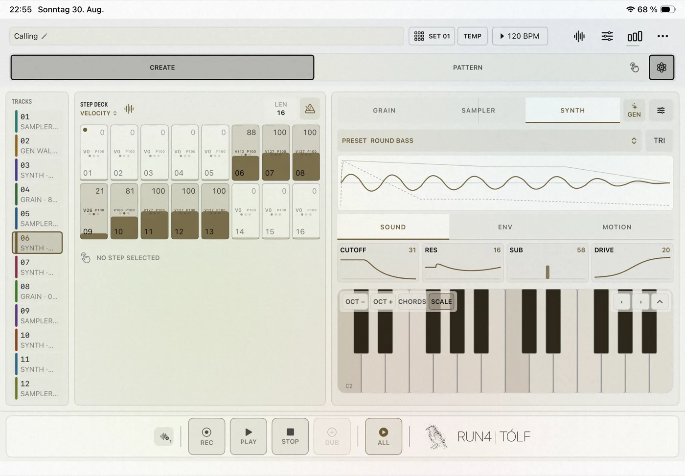
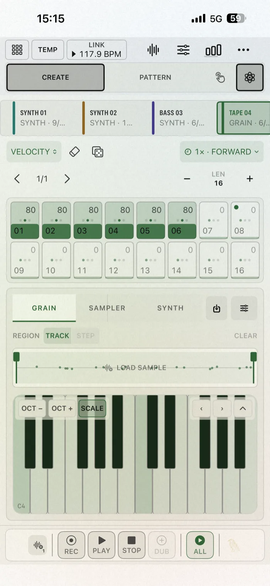
CREATE on iPhone and iPad. The step deck, the keyboard and the selected track's own sound. On iPad the track rail and the sound editor sit beside the deck instead of below it.
TÓLF has twelve tracks. Each one is a Synth, a Sampler or a Granular track, and you can change which at any time.
Synth is TÓLF's own instrument, subtractive and FM together. Sampler plays loaded samples, across pads and across layers. Granular plays a sample as a cloud of overlapping grains rather than as one note, which is how you get a texture out of a sound instead of a hit.
The Synth ships with twenty-nine factory patches: basses, plucks and leads, pads, electric pianos and bells, tuned percussion for drums and mallets, and short digital accents. Its FM side has its own decay, so a struck sound can lose its bite while the note is still ringing.
The track rail runs along CREATE. Each tile carries a track's name and colour and shows small marks when it is muted or soloed, so you can read the state of the whole set without opening the mixer. Long-press a tile for Mute and Solo, Rename and Colour, Move Left and Move Right, and Duplicate Track.
Choosing a track swaps everything beneath the rail — its steps, its sound editor, its keyboard. You are always working on one track.
The step deck shows sixteen steps at a time. A track's own length, LEN, can be longer than that, and every track can have a different one. Twelve tracks running at twelve different lengths against each other is not a special mode here; it is just what happens if you set them that way.
Tap a step to switch it on or off. Long-press it to open the inspector, which holds velocity, probability, nudge for micro-timing, the notes the step plays, its gate mode — One-Shot, Gate or Hold — its parameter locks, and its step components.
A two-octave keyboard sits beside the deck at all times. Play the sound, audition a patch, or record notes straight in without going looking for a keyboard somewhere else.
The dice beside a lane randomises only that lane. It draws from a deliberately narrow set of values, so you can shake up the velocities of a part without losing the part.
A Synth track can also record automation, which is different from a parameter lock. A lock belongs to one step and only sounds when that step does. An automation lane runs across the whole pattern, including the silent steps. Arm it with the red A button in the transport row and move any Synth control while the pattern plays; the curve draws itself over the step grid as it records, and the deck follows whichever control you are moving. Long-press A for Delete Automation Only, which clears the lanes and leaves every step and lock untouched.
A part does not have to be written by hand. Four generators can make the notes for you, and they sit on the GENERATOR card in CREATE.
EUCLID spreads a number of hits as evenly as it can across a number of steps — the pattern behind a great deal of drum music. WALK moves from note to note without a plan. CASCADE falls through a phrase and starts again from the top. BLOOM drifts in slow clouds, several rates of change layered over one another.
KIND chooses which. What sits beside it depends on the generator: PULSES, STEPS and ROTATE for EUCLID, DENSITY and RANGE for the other three. The card's own preview shows the pattern running before you commit to anything.
Every generator works its notes out from the track's seed and its position in the bar, and from nothing else. The same bar always plays the same notes. The export engine works them out the same way the live engine does, so a generated part exports exactly as you hear it, with no need to freeze it into steps first.
REROLL draws a new seed. Nothing else changes — same generator, same settings, different notes.
WALK is free by default: every note is drawn on its own, so the line jumps about. LINE draws a continuous line instead. The leaps stay short, the melody is pulled gently back towards the root, and it begins again at the root every sixteen steps, so it sings a phrase rather than wandering off. Turn LINE up for a tighter, more singable line; FREE is the original behaviour.
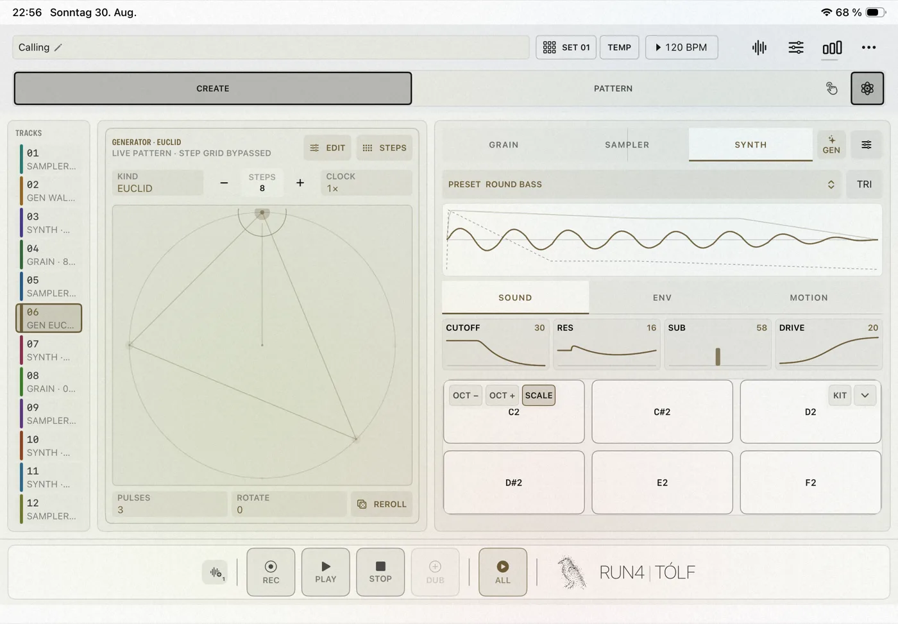
A Granular track with EUCLID running. The preview shows the rhythm before anything is written.
Generators are good at finding something. They are no good at all at letting you keep the good bit and change one note. TAKE PHRASE is the bridge between the two.
Press it while a generator is running and the cycle you are hearing is written into the track's own steps, and the generator switches off. Nothing changes in the sound at that moment: the same notes keep playing. They are simply ordinary steps now, and you can edit them one at a time.
Steps the generator skipped are kept as silent steps rather than removed, so the pattern keeps its length and a rest is still a place you can put a note. Each rest carries the last note that sounded before it, so switching one on gives you a note in key rather than a stray one.
With the generator off, VARY reshapes those steps one dimension at a time. RHYTHM moves notes to other steps without adding or removing any, so the part keeps its density. PITCH moves each note a few steps within the track's key. DYNAMICS changes how hard the notes hit.
What you did not choose is left exactly as it was. That is the whole point of it: a reroll changes everything at once, and this changes one thing while you keep the rest. Press it again for another go — each press is its own edit, so undo takes you back a step at a time.
GENERATOR is one of five pages sharing that place on CREATE. Swipe across the card to move through them: GENERATOR, ARP, STRUM, HOLD and HARMONY BRAIN. They wrap around, so you can keep swiping in one direction.
ARP takes the notes of a chord — held on the keyboard, or written on a step — and plays them one after another. MODE is the order they come in, RATE is how many notes fit into one step, and RANGE is how many octaves the run climbs through.
FIGURE gives that run a shape. Eight positions sit under the controls, and each one taps through four states: a rest, a short note, an ordinary note and an accent. The run reads them in turn and starts again at the ninth, so a rate of four uses the first four positions and a rate of eight uses all of them.
A rest is a hole in the figure, not a pause in the arpeggio. The note order carries on underneath, so what follows a rest is the note that would have come anyway.
GATE is how long the notes are, measured against the space between them — short for something clipped and rhythmic, long for something that runs together. ACCENT is how far the ordinary notes step back so the accented ones stand out. Accents never get louder than the part; everything else gets quieter, which is the same thing to the ear and safer for the mix.
STRUM spreads the notes of a chord instead of striking them all at once. VOICE and INVERT build the chord, and the STRUM fader is how long the whole spread takes, from a hint of looseness to a slow roll.
STROKE is which end of the chord is struck first. UP starts at the bottom, DOWN starts at the top, and ALT changes with every bar, so a chord that repeats does not sound mechanical.
SHAPE is how the notes are spaced inside that time. EVEN spaces them equally. SPEED starts hesitantly and gathers pace. SLOW starts fast and opens out.
ACCENT lets the later notes fall back behind the first one, the way a picked chord does, so the stroke has an attack rather than being a block of equal notes.
HOLD latches a chord so it keeps sounding after you let go, which is what makes the other four usable with one hand. HARMONY BRAIN keeps what you play inside a key and can move a whole part to another chord without you rewriting it.
A Sampler track adds a pad grid to CREATE, above its step deck. It shows six pads belonging to the selected track. KIT mode swaps the same grid for all twelve TÓLF tracks at once, by name and colour, so you can play kick, snare and the rest across tracks without selecting a track between hits.
Tap an empty pad to load a sample into it. Tap a loaded pad and the waveform editor above the grid moves to that pad's own region, rather than opening a separate sheet. Long-press a loaded pad to reload or delete its sample.
A whole pad bank can be saved as a Kit and recalled later, so a set of drum hits and a set of melodic one-shots can be swapped under the same pattern. Kits are shared between the app and the plug-in: one saved in either shows up in the other.
Reel is TÓLF's own recorder, separate from RUN4's Tape. It captures the microphone, or resamples TÓLF's own mix, straight into a reel slot with an optional count-in. What it captures becomes material a Sampler track or a pad can use, so a sound you make can be played back as an instrument without leaving TÓLF.
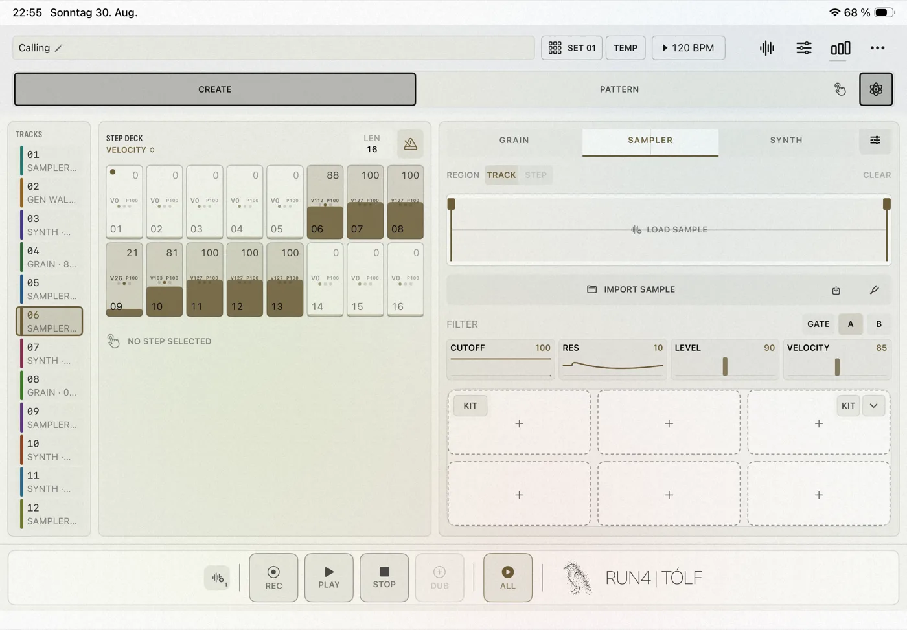
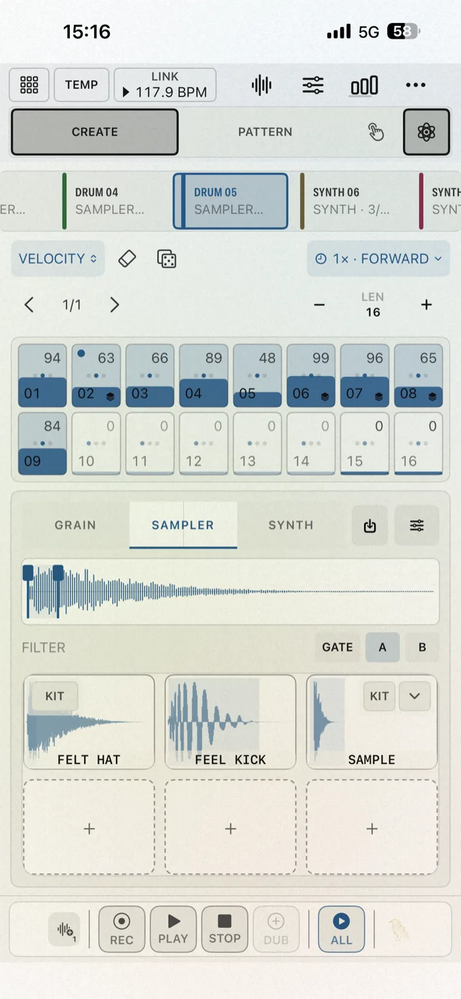
A Sampler track on iPhone and iPad. The waveform editor above the deck follows whichever pad or region is selected.
TÓLF has four modulators, M1 to M4, shared by the whole project. Each one is an LFO with a WAVE, a RUN mode, a RATE in hertz, a PHASE offset and a DEPTH. FREE keeps it running; RETRIG restarts it at its phase offset every time the transport starts.
A slot's DEPTH starts at zero, so a modulator you have not set up yet is silent no matter what is routed to it. The dot under each M1 to M4 tab tells you which slots are actually doing something. CLEAR empties one slot and leaves the other three alone. The slots live on the MOD page of Master Devices.
Routing is done from the parameter, not from a matrix. Any continuous fader on a track's sound carries a small routing icon beside its name. Tap it, or long-press the fader, and all four slots are listed. Assign one and it gets its own amount, from minus one to plus one, so a slot can push one parameter up while pulling another down. The slot's DEPTH then fades all of its routes in and out together without disturbing the balance between them.
A long-press on a fader never changes its value. Whatever the hold nudged is put back before the sheet opens.
A routed parameter wears an M1 to M4 chip beside its name, one for every slot driving it, so a fader moving on its own is never a mystery. Tap the chip to jump to that slot.
Around fifty destinations per track are reachable, across all three engines: both envelopes on the Synth and the Sampler, the FM decay, every LFO amount, and the whole Granular engine down to grain size, spread and the scan controls. Two kinds of thing are deliberately left out. A sample's start, end and loop start are not routable, because moving where a sounding voice is reading from makes it click. Neither are the switches — wave shape, loop mode, reverse and the like — because there is no continuous value in them to move.
ARRANGE holds the structure, one layer at a time: Patterns, then Scenes, then Song.
A Pattern is the twelve-track grid, with each track's own length, clock division and playback mode. ARRANGE shows every track's filled steps at once, with one playhead spanning all twelve rows, so the whole pattern reads at a glance. You can edit steps here with the same tap and drag the CREATE deck uses.
A Scene captures a pattern as a playable unit. Song is an arrangement of scene cues, quantised to bars. Editing a cue stops a running song first, so an edit can never reorder the music out from under a playhead.
OPS holds pattern-level tools: a Euclidean rhythm generator that writes straight onto the selected track with a preview first, and trigger conditions per step.
Each pattern's filled-step and parameter-lock counts are summarised in the list, so you can recognise a busy pattern before opening it.
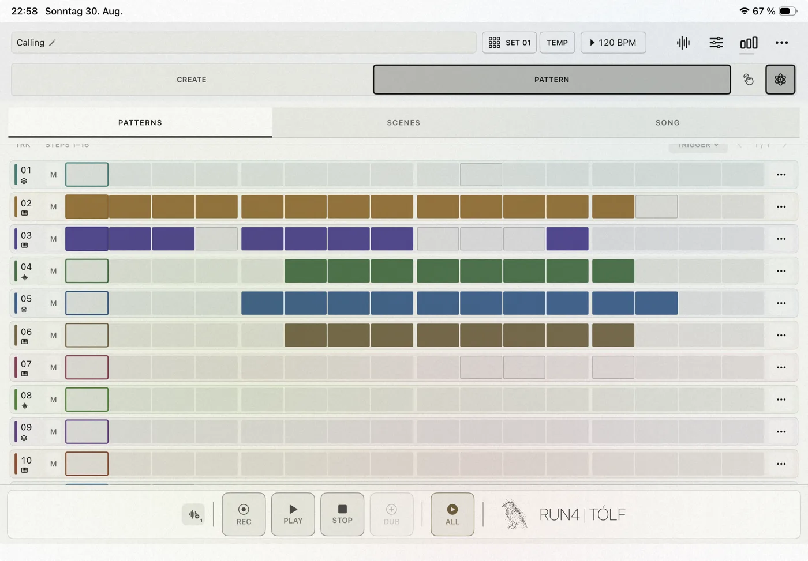
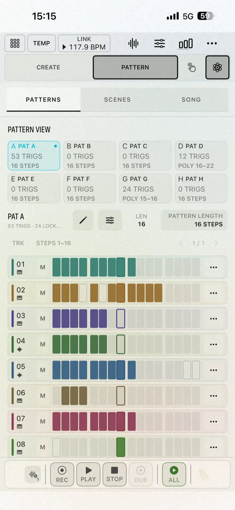
ARRANGE's pattern view on iPhone and iPad. All twelve tracks at once, with a shared playhead across every row.
TÓLF's twelve channels sit on RUN4's own Mix/Master screen, beneath RUN4's four, rather than on a mixer of their own. They use the same channel strip, with the same meter.
Every strip on that page carries M and S under the fader. M mutes that channel. S solos it and dims everything that is not soloed, so a channel silenced by somebody else's solo looks different from one you muted yourself. On RUN4's own four channels, long-pressing M or S arms MIDI Learn for it; TÓLF's twelve do not take a binding yet.
A mix group collects any of the twelve tracks under one Group Trim, Glue and Drive, plus four sends: Air, Color, Tone and Grain. A track belongs to one group at most. Tap its number in the group's grid to claim it, tap again to release it back to master. A group's controls are added on top of each member's own level, never instead of it.
Beyond those, each TÓLF channel can also send into RUN4's four shared Bus FX buses, the same ones RUN4's own tracks use. The BUS entry in TÓLF's Devices sheet opens that shared editor rather than a second one of its own.
Naming a group well is worth the moment it takes: groups are what the Tape REC menu offers you as recording sources later.
Master Devices is TÓLF's project-wide processing — GRAIN, TONE, COLOR and AIR, mirroring RUN4's own device names — plus the MOD page with the four modulator slots.
All of this is in the AUv3 plug-in as well. MIDI Learn is not, because in a plug-in the host owns controller mapping.
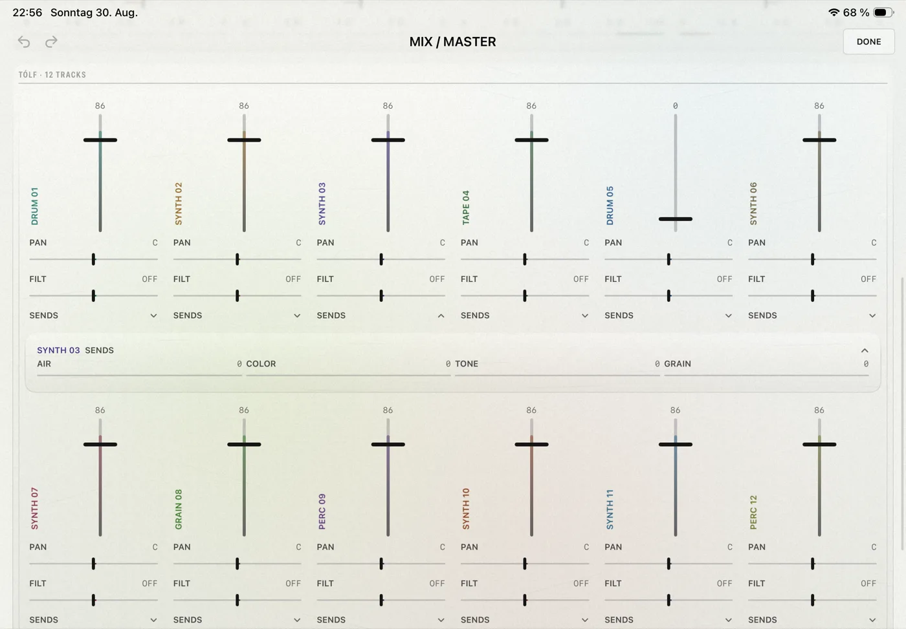
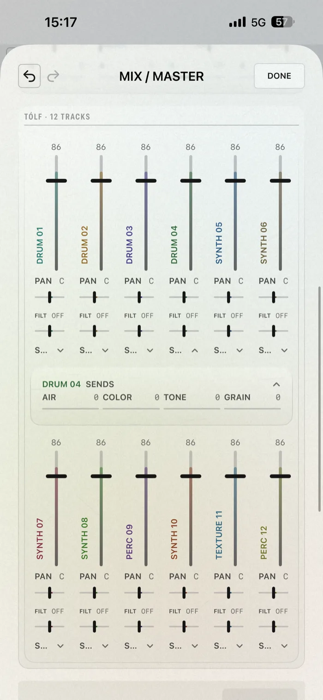
TÓLF's channels on Mix/Master, iPhone and iPad. The same channel strip RUN4's own tracks use.
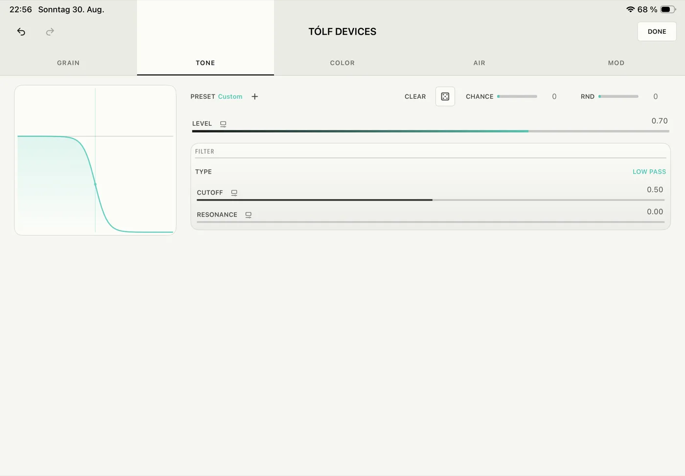
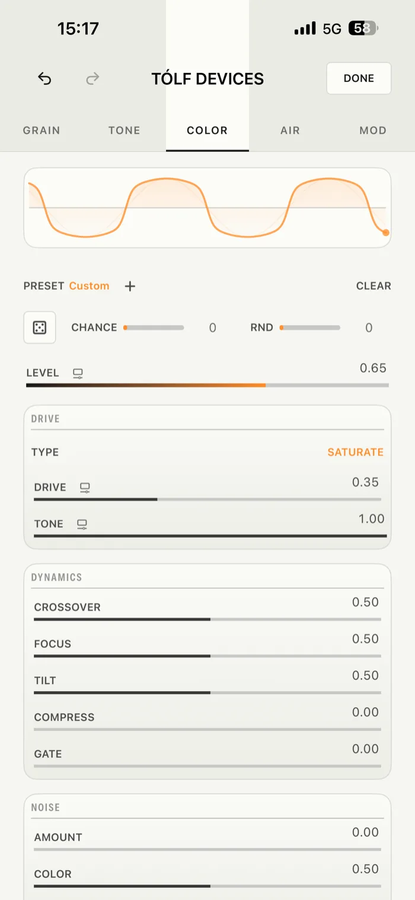
TÓLF's Master Devices, here on Color and Tone. Project-wide processing rather than a chain per track.
Long-press REC on any Tape track to open its menu. While TÓLF is active, a TÓLF section appears there beside Tape's own capture-length choices.
Choose Input for the normal microphone or line source, TÓLF · All Tracks for TÓLF's whole mix, TÓLF · Track for one track, or TÓLF · Groups for a named group. A muted track or an empty group is shown but cannot be chosen, so you never record silence by accident.
Only one Tape track can be armed with a TÓLF source at a time. Arming another disarms the first. The armed track shows a short tag in TÓLF's colour — T·ALL, T·3, T·A+B — instead of the usual record red, so you can see at a glance that it is capturing something other than the microphone.
Pressing REC then behaves exactly like any other Tape recording: the same free or fixed length, count-in and metronome. Arming only chose the source.
If TÓLF is already playing, the capture waits for its next bar and REC shows QUEUED until then. If TÓLF is not playing, pressing REC rewinds it to the top and starts it, so the take begins on the very first frame. If TÓLF stops while a capture is still waiting for a bar that can now never come, the recording is cancelled cleanly rather than leaving REC stuck.
A live capture and an offline bounce cannot run at the same time. RUN4 blocks the second rather than running both engines against the same tracks.
TÓLF renders through RUN4's own Export & Bounce screen, reached from the ellipsis menu. TÓLF's twelve tracks appear there as stems alongside RUN4's four, so one press exports the whole project rather than two separate ones.
MIDI export writes a Standard MIDI File. Ableton export writes a complete Live Set as a zip, with the rendered stems inside it, ready to drag into Live.
Both render from the same offline engine the app plays with, so a generated part — EUCLID, WALK, CASCADE or BLOOM — comes out as the music you heard, not as whichever steps happened to be lit when you pressed export.
Bouncing TÓLF down to a Tape take replaces whatever is on that tape. It is not an overdub. The render is quantised to whole bars, and the suggested length is worked out from the cycle lengths of the tracks you selected, so a bounce loops cleanly instead of cutting a phrase in half.
A bounce renders from its own copy of the engine and never touches what you are playing, so it cannot spoil a take.
TÓLF's MIDI settings are in RUN4's Settings › MIDI page, under their own TÓLF heading. They are entirely separate from RUN4's own Poly and control-channel settings, because TÓLF's twelve tracks are their own instrument.
Input chooses one source or all of them. MPE Lower Zone accepts MPE with a selectable bend range. Program Change In lets incoming program changes address TÓLF.
Input Mode decides what arriving notes do. Play Only auditions them. Live / Spray Rec records them into the running pattern, with an adjustable quantise strength. Step Rec writes them onto steps at a position you move yourself, with the chevrons or a reset to the start.
Clock In follows an external clock. Output turns on TÓLF's own MIDI output, either to its own virtual port or to a destination you choose, with its own output mode and a separate toggle for sending TÓLF's tempo out.
CC Mapping learns bindings — send a CC or move a control to bind it — lists and clears what exists, and saves a whole mapping set as a named preset.
A track's own MIDI Routing, in its sound editor's Instrument Settings, holds its channel override, a delay for compensating a slow external synth, and a Local Control toggle. Turning Local Control off keeps the track sending MIDI and applying its automation to that output, while silencing its own internal voice — which turns the track into a sequencer for an external instrument.
TÓLF's macro bank is included in RUN4's Current Bank MIDI mapping, so a controller bound there follows TÓLF too, and can be pinned to TÓLF so it always reaches a TÓLF macro even while a tape track has focus.